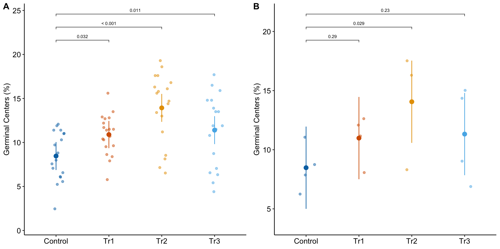
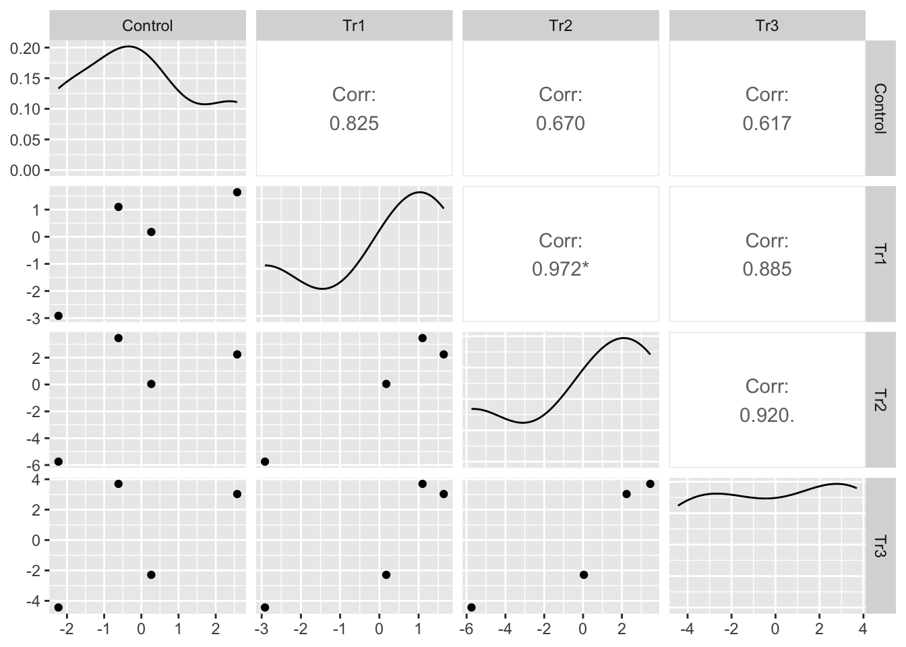
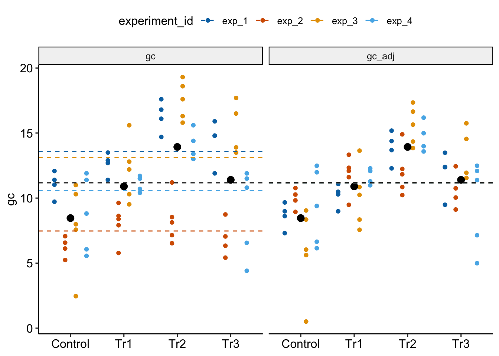
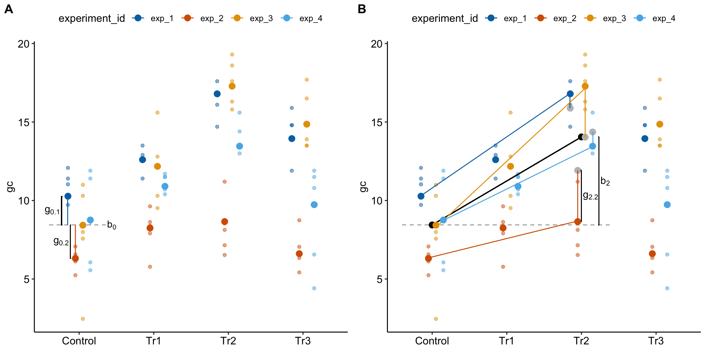

14 Models for non-independence – linear mixed models
Probably no chapter in this book is more important for the best-practice analysis of experimental data than this chapter. Why? Because many if not most experimental data violates the assumption of independence and any analysis using standard t-tests and ANOVA will always lead to quantitative error in inference (confidence intervals and p-values) and often lead to qualitative errors in inference (statements about “significance”). Standard analysis of non-independent data can lead to absurdly liberal inference (the p-values are far lower than the data support), but can also lead to moderately conservative inference (the p-values are higher than the data supports). Liberal inference generates false discovery and lures researchers down dead-end research pathways. Conservative inference steers researchers away from true discovery.
Linear Mixed Models are an extension of linear models that appropriately adjust inferential statistics for non-independent data. Paired t-tests and Repeated Measures ANOVA are classical tests that are special cases of linear mixed models. Linear mixed models are more flexible than these classical tests because the models can include added covariates or more complex models generally. And, linear mixed models can be extended to Generalized Linear Mixed Models for counts, binary responses, skewed responses, and ratios.
Before introducing experimental designs that generate non-independent data and the models used to analyze these, let’s explore two ubiquitous examples, one that leads to liberal inference and one that leads to conservative inference.
14.1 Liberal inference from pseudoreplication
Researchers are interested in regulation and repair of DNA double-stranded breaks and use a proximity ligation assay (PLA) of HeLa cells to investigate the number of damage response events (“foci”) per cell with and without an inhibitor of transcription elongation (DRB). The number of foci in each of fifty cells per treatment is measured. The experiment is replicated three times. The researchers use a t-test to compare the effect of DRB on foci count and naively include all measures in the analysis.
What is naive about the analysis? The fifty measures per cell are technical replicates and the values within a cell are not independent of each other because they share aspects of cell environment not shared by values in other cells. Including technical replicates in an analysis without accounting for this non-independence is a kind of pseudoreplication
To show how this naive analysis results in extremely liberal inference and an increase in false discovery, I simulate this experiment using a case in which there is no effect of DRB treatment, so a low p-value indicates a false-discovery. The simulation is simplified with the two following conditions: 1) the model pretends that count data are normally distributed (this is because we want to focus on pseudoreplication and not a misspecified distribution) and 2) the model pretends that values from each treatment within an experiment are independent (this is because we want to focus on pseudoreplication).
In this naive analysis of the experiment, the researcher finds an effect of treatment with a p-value of 0.000073 and uses this small p-value to justify a decision to move forward with follow-up experiments. But this low p-value is not supported by the data – this discovery is false. This very small p-value is not an example of a “rare event”. In fact, if the researcher repeats the experiment 1000 times, then the median p-value is 0.000195 and 72.3% of the 1000 p-values lead to the same false discovery if 0.05 is used to make the decision to move forward.
While this example is fake, I see this naive analysis a lot: tumor area of multiple tumors per mouse, islet area of multiple islets per mouse, number of vesicles docked to a membrane in multiple cells per mouse, the number of mitochondria in multiple cells per mouse, the number of neurites in multiple neurons in multiple cells per mouse, etc. etc. Indeed, when I’m looking for examples of pseudoreplication to teach, I just look for figures with a bunch of points per treatment – something similar to this plot of the fake data experiment. Regardless, this is a huge source of false discovery that could disappear overnight.
14.2 Conservative inference from failure to identify blocks
Researchers are investigating the regulation of the differentiation of stem blood cells into osteoclasts, which can cause osteoporosis if overactivated. The researchers randomly sample three mice from 6 litters and use a littermate control design: within a litter, one sib is assigned to control (CN), one to glucortacoid (GC) treatment, and one to buthionine sulphoximine (BSO) treatment. The researchers are investigating the mechanism of GC-induced osteoporosis and if the researcher’s model is correct, then BSO should block this mechanism. Following an ANOVA, the researchers report the unadjusted p-value for each pairwise comparison with the expectation that BSO will reverse the effect of GC.

What is naive about the analysis? Any value measured from sibling mice within a litter are not independent of each other because the sibling mice share aspects of genetics and maternal environment not shared by mice in other litters. This shared variance adds correlated noise to data and failure to account for the shared variance will almost always lead to more conservative inference.
In the experiment, the results “looked” like the expected results if the model GC-induced osteoporosis were correct, but the p-value of the focal contrast (BSO - GC) was not < 0.05 (Figure 14.2 A). The researchers expanded the experiment, adding data from four more litters (Figure 14.2 B). Had the researchers analyzed the initial set of data using a statistical model that accounts for the shared variance within a litter (Figure 14.2 C), the researchers would have been satisfied and fewer mice would have been killed, fewer resources used, and more time to pursue continued probing of the mechanism. The statistical model used to take advantage of the littermate control design is a linear-mixed model. An experiment with littermate control is known as a blocked design.
NHST Blues
NHST encourages peeking at the data to see if p < 0.05 for a focal contrast, and collecting more data if this isn’t the case. Don’t do this. Peeking makes the p-value non-valid and will increase the false discovery rate. Peeking is a variation of the multiple test problem. In clinical trials there are statistically rigorous methods for peeking, which allows a trial to stop early.
The small p-value in the BSO - GC contrast using a linear mixed model is not an example of a “rare event”. In fact, if the researchers repeated the experiment 1000 times, 89.1% of the BSO - GC p-values using the linear mixed model are less than 0.05 while only 29.9% of the p-values following classical ANOVA are less than 0.05.
While this example is fake, I see this naive analysis a lot – littermate controls is very, very common but other examples are too, including replicated experiments (each experiment is a block). There are certain instances where researchers do recognize non-independence and do use a paired t-test but the vast majority of blocked designs (occurring in almost all experimental biology papers) go unrecognized. This is a huge source of failed discovery that could disappear overnight.
14.3 Introduction to models for non-independent data (linear mixed models)
This chapter is about models for correlated error, including linear models with added random factors, which are known as linear mixed models. In classical hypothesis testing, a paired t-test, repeated measures ANOVA, and mixed-effect ANOVA are equivalent to specific cases of linear mixed models. Linear mixed models are used for analyzing data composed of subsets – or batches – of data that were measured from the “same thing”, such as multiple measures within a mouse, or multiple mice within a litter. Batched data results in correlated error, which violates a key assumption of linear models (and their “which test” equivalents) and muddles statistical inference unless the correlated error is modeled, explicitly or implicitly. In some experimental designs (blocked designs), failure to model the correlated error reduces precision and power, contributing to reduced rates of discovery or confirmation. In other designs (nested designs), failure to model the correlated error results in falsely high precision and low p-values, leading to increased rates of false discovery. The falsely high precision is due to pseudoreplication. I think it’s fair to infer from the experimental biology literature, that experimental biologists don’t recognize the ubiquitousness of batched data and correlated error. This is probably the biggest issue in inference in the field (far more of an issue than say, a t-test on non-normal data).
What do I mean by “batch” and how can correlated error both increase and decrease false discovery? Consider an experiment to measure pancreatic islet area in response to two experimental factors: \(\texttt{genotype}\) (WT, KO) and \(\texttt{treatment}\) (presence/absence of some drug believed to be an agonist of the knocked out protein). While it may seem like the data from this experiment should be analyzed using the ANOVA option in GraphPad Prism (or, as advocated in this book, a general linear model that is equivalent to the ANOVA), the best practice statistical model actually depends on the experimental design. Experimental design matters because different designs introduce different patterns of correlated error due to shared genetics and environment. Recall that inference from a linear model (including t-tests and ANOVA) assumes independence (Chapter xxx) – that is, each response value has no relationship to any other value, other than that due to treatment. Lack of independence results in patterns of correlation among the residuals, or correlated error.
Something like the first experiment below (Design 1) is the necessary design to use the statistics that have been covered in this book to this point, without extreme violation of the independence assumption. But many (most?) experiments in experimental bench biology do not look like the design in Design 1 below. Instead, many (most?) experiments are variants of Designs 2-4, all of which have extreme violations of the independence assumption. Interestingly, some of these violations result in conservative statistics and reduced, true discovery rate while others result in liberal statistics and increased, false discovery rate.
Design 1. The design in Figure @ref(fig:lmm-biological-replicates_1) is a factorial design with two factors, \(\texttt{genotype}\) and \(\texttt{treatment}\), each with two levels. Twenty mice of the same sex, each from a different litter from a unique dam and sire mating, are randomly sampled and assigned to one \(genotype \times treatment\) combination (five mice per combination). All mice are housed individually (20 cages). The pancreatic tissue from all mice is prepared in a single batch and the area of a single islet is measured from each mouse. The entire experiment is carried out at the same time and each component (tissue preparation, measuring) is carried out by the same person (these could be different people for each component). This is a Completely Randomized Design (CRD). The five replicate mice per treatment are treatment replicates (often called biological replicates in experimental biology. A CRD does not have batched data.

Design 2. In the design in Figure @ref(fig:lmm-biological-replicates), four littermates are randomly sampled from five litters, each with a different dam and sire. Within each litter, mice are randomly assigned to each of the four treatment combinations (one per combination). Each litter is randomly assigned to cage with only a single litter per cage. All other aspects of this design are as in Design 1. This is a Randomized Complete Block Design. The five replicate mice per treatment are the treatment replicates. Each litter/cage combination is a type of batch called a block. A blocked design typically functions to reduce noise in the model fit (this increases power) and to reduce the number of litters and cages needed for an experiment. The four measures of Islet Area within a litter/cage (one per mouse) are not independent of each other. Each cage has four mice from the same litter and these mice share genetic and maternal factors that contribute to mouse anatomy and physiology that are not shared by mice in other litters. Additionally, each cage has a unique set of environmental factors that contribute to the error variance of the measure of the response. Each cage shares a cage-specific history of temperature, humidity, food, light, interactions with animal facilities staff, and behavioral interactions among the mice. All response measures within a litter/cage share the component of the error variance unique to that litter/cage and, as a consequence, the error (residuals) within a litter/cage are more similar to each other than they are to the residuals among litters/cages.

Design 3. The design in Figure @ref(fig:lmm-technical-replicates) is exactly like that in Design 2, except that the researchers take three measures of iselet area per mouse. The three measures are subsampled replicates. Experimental biologists often call these technical replicates, especially when the multiple measures are taken from the same preparation. Subsampling is a kind of nested design in which one variable is nested within (as opposed to crossed with) another variable. Here, the subsampled variable (subsample_id) is nested within the mouse_id variable. In addition to each litter/cage being a batch, each mouse is a batch. Each mouse has a unique set of factors that contribute to the error variance of the measures of the response in that mouse. All response measures within a mouse share the component of the error variance unique to that mouse and, as a consequence, the error (residuals) within a mouse are more similar to each other than they are to the residuals between mice

Design 4. The design in Figure @ref(fig:lmm-segregated) is a variation of Design 2, but the five treatment replicates of each combination are housed together in the same cage. In this design, each litter is a batch and each cage is a batch but these are different batches, unlike Design 2.
In each of these experiments, there is systematic variation at multiple levels: among treatments due to treatment effects and among batches due to batch effects. Batches come in lots of flavors, including experiment, litter, cage, flask, plate, slide, donor, and individual. The among-treatment differences in means are the fixed effects. The among-batch differences are the random effect. An assumption of modeling random effects is that the batches are a random sample of the batches that could have been sampled. This is often not strictly true as batches are often convenience samples (example: the human donors of the Type 2 diabetes beta cells are those that were in the hospital).
The variation among batches/lack of independence within batches has different consequences on the uncertainty of the estimate of a treatment effect. The batches in Experiment 1 contain all treatment combinations. The researcher is interested in the treatment effect but not the variation due to differences among the batches. The batches are nuissance factors that add additional variance to the response, with the consequence that estimates of treatment effects are less precise, unless the variance due to the batches is explicitly modeled. Modeling a batch that contains some or all treatment combinations will increase precision and power.
Batches that contain at least two treatment combinations are known as blocks. A block that contains all treatment combinations is a complete block. A block that contains fewer than all combinations is an incomplete block. Including block structure in the design is known as blocking. Blocks are non-experimental factors. Adding a blocking factor to a statistical model is used to increase the precision of an estimated treatment effect. Design 2 is an example of a randomized complete block design.
In Design 3, there are multiple measures per mouse and the design is a randomized complete block design with subsampling. The subsampling is not the kind of replication that can be used to infer the among treatment effect because the treatment assignment was not at the level of the subsamples. The treatment replicates are the litters/cages, because it was at this level that treatment assignment was randomized. A statistical analysis of all measures from a subsampled design without modeling the correlated error due to the subsampling is a kind of pseudoreplication. Pseudoreplication results in falsely precise standard errors and false small p-values and, consequently, increased rates of false discovery.
In Design 4, the treatment is randomized to batch, so each batch contains only a single treatment level. In these segregated experimental designs, the variation among batches that arises from non-treatment related differences among batches confounds the variation among batches due to a true treatment effect. Design 4 is an extreme example of this – there is only a single cage with a specific treatment combination. Imagine 1) the true effect of a treatment combination is zero and 2) an aggressive mouse in the control cage stimulates the stress response in the other mice and this stress response has a large effect on the value of the response variable measured by the researchers. The researcher is fooled into thinking that the treatment caused the difference in the response.
In all of these designs, it is important for the researcher to identify the experimental unit and the measurement unit. The experimental unit is the entity that was randomly assigned the treatment. In designs 1 – 3, the experimental unit is the mouse. In experiment 4, the experimental unit is the cage. The measurement unit is the entity that was measured. In designs 1, 2, and 4, the measurement unit is the mouse. In design 3, the measurement unit is specific islet that was measured.
Pseudoreplication
In pseudoreplication, the degrees of freedom used to compute the test statistic and the p-value are inflated given the experimental design and research question. An example: A researcher wants to investigate the effect of some protein on mitochondrial biogenesis and designs an experiment with a wildtype (WT) and a conditional knockout (KO) mouse. Mitochondrial counts from twenty cells in one WT mouse and one KO mouse are measured and the researcher uses a t-test to compare counts. The sample size used to compute the standard error in the denominator of the t-value is 20. The t-distribution used to compute the p-value uses 38 df (20 measures times two groups minus two estimated parameters). This is wrong. The df are inflated and the estimate of the standard error of the difference (the denominator of the t-value) is falsely small. The correct sample size for this design is 1 and the correct df is zero. The sample size and df are inflated for this design because the treatment was randomized to mouse and not to cell. Mouse is the experimental unit – the number of experimental units is what gives the degrees of freedom. The df are correct for inference about the two individuals (how compatible are the data and a model of sampling from the same individual?), but not for inference about the effect of genotype. We cannot infer anything about genotype with a sample size of 1, even with 20 measures per mouse, because any effect of treatment is completely confounded with other differences between the two mice.
14.4 Experimental designs in experimental bench biology
Given the basic principles above, let’s consider the kinds of experimental designs seen in experimental bench biology (Fig. @ref(lmm-designs)).


14.4.1 Notation for models
i = 1..t (treatments)
j = 1..b (blocks)
k = 1..r (experimental replications within a block or within a CRD with no block structure)
m = 1..s (subsamples or technical replicates)
14.4.2 Completely Randomized Design (CRD)
The Completely Randomized Design experiment in Figure @ref(fig:lmm-designs)A has a single factor, \(\texttt{treatment}\) with two levels (“Cn” and “Tr”). Five mice are randomly assigned to each treatment level. Each mouse is bred from a different litter and housed in a separate cage. The researchers measure a single value of the response variable from each mouse. The five replicate mice per treatment are the treatment (biological) replicates. The design is completely randomized because there is no subgrouping due to batches. What kinds of subgrouping does this design avoid?
By using a single mouse per litter, there are no litter batches and subsets of mice don’t share litter effects – common litter responses to the Cn or Tr treatments. Each litter has a unique set of factors that contribute to the error variance of the measure of the response. Siblings from the same dam and sire share more genetic variation than non-siblings and this shared genetic variation contributes to phenotypes (including the response to treatment) that are more likely to be similar to each other than to non-siblings. Siblings from the same litter share the same history of maternal factors (maternal effects, including epigenetic effects) specific to the pregnancy and even the history of events leading up to the pregnancy. This shared non-genetic and epigenetic variation contributes to phenotypes (including the response to treatment) that are more likely to be similar to each other than to non-siblings. All response measures within a litter share the genetic, maternal environmental, and epigenetic components of the error variance unique to that litter and, as a consequence, the error (residuals) within a litter are more similar to each other than they are to the residuals between litters.
By housing each mouse in it’s own cage, there is no cage batch and subsets of mice don’t share cage effects – common cage responses to the Cn or Tr treatments. As stated earlier, each cage has a unique set of factors that contribute to the error variance of the measure of the response. Each cage shares a cage-specific history of temperature, humidity, food, light, interactions with animal facilities staff and behavioral interactions among the mice. All response measures within a cage share the component of the error variance unique to that cage and, as a consequence, the error (residuals) within a cage are more similar to each other than they are to the residuals between cages.
Examples:
- Ten mice from separate litters are sampled. Five mice are randomly assigned to control. Five mice are randomly assigned to treatment. A single measure per mouse is taken. Mouse is the experimental unit. \(t=2\), \(b=0\), \(r=5\), and \(s=1\).
- Ten cell cultures are created. Five cultures are randomly assigned to control and five to treatment. A single measure per culture is taken. Culture is the experimental unit. \(t=2\), \(b=0\), \(r=5\), and \(s=1\).
Known Unknowns
While most data from experiments in bench biology are analyzed as if the experimental design is a CRD, a good question is, what fraction of these actually are CRD? We know that many (most?) mouse experiments will have batched measures and correlated responses because most experiments are conducted with multiple mice per litter and/or cage (or equivalents in other model systems). Many cell culture data come from multiple replicates of the whole experiment – the experiment functions as a block. And time series experiments include multiple measures on the same experimental unit over time. Except for time series experiments, researchers in experimental bench biology are using almost exclusively statistical tests that assume independence of errors (the tests appropriate for CRDs). How this mismatch between experimental design and statistical practice affects the rate of false and true discovery in cell and molecular biology is entirely unknown.
14.4.3 Completely Randomized Design with Subsampling (CRDS) or “Nested Design”
The Completely Randomized Design with Subsampling experiment in Fig. @ref(fig:lmm-designs)B is exactly like the CRD except that the researchers measure multiple values of the response variable from each mouse under the same condition (that is, not different in treatment or time). The multiple measures are subsampled (technical) replicates.
- Do not confuse subsampled replicates with measures of the response under different conditions in the same mouse, for example a measure from one brain slice under the control treatment and a measure from a second brain slice under the drug treatment. This example is a kind of Randomized Complete Block Design, which is outlined next and the core design in this chapter.
- Do not confuse subsampled replicates with a measures of the response at different times in the same mouse, for example, the plasma glucose levels at baseline and at five post-baseline time points. This example is a kind of longitudinal design, which is outlined below and more thoroughly in the chapter Linear models for longitudinal experiments.
- Do not confuse subsampled replicates with measures of different response variables from the same mouse, for example measures of the weights of five different skeletal muscles. This example is a kind of multiple response which is addressed xxx.
The technical replicates are a kind of pseudoreplication. The general linear model y ~ treatment fit to these data, including t-tests and traditional ANOVA, will have falsely high precision and falsely low p-values.
Examples:
- Ten mice from separate litters are sampled. Five mice are randomly assigned to control. Five mice are randomly assigned to treatment. Multiple measures per mouse are taken. Example: five measures of Islet Area are measured in each pancreas. Mouse is the experimental unit. Each of the measures is a technical replicate because the treatment is not randomly assigned to each islet but to the whole mouse. \(t=2\), \(b=0\), \(r=5\), and \(s=5\).
- Ten cell cultures are created. Five cultures are randomly assigned to control and five to treatment. Multiple measures per culture are taken. Example: Mitochondrial counts are measured from five cells in each culture. Culture is the experimental unit. Each of the counts is a technical replicate because the treatment is not randomly assigned to each cell but to the whole culture. \(t=2\), \(b=0\), \(r=5\), and \(s=5\).
Notes:
- Subsampling can occur at multiple levels. Example: Ten mice from separate litters are sampled. Five mice are randomly assigned to control. Five mice are randomly assigned to treatment. Five neurons in a slice of brain tissue are identified in each mouse. From each neuron, the length of five dendrite spines are measured. The five measures of spine length are “nested within” neuron and the five neurons are “nested within” mouse. Nested subsampling can quickly lead to massive pseudoreplication and false discovery.
14.4.4 Randomized Complete Block Design (RCBD)
The Randomized Complete Block Design experiment in Figure @ref(fig:lmm-designs)C is similar to the CRD except that all treatment combinations (two here) are randomly assigned to sibling mice within a litter. Here, two mice from each litter are randomly selected and one is randomly assigned to “Cn” and the other to “Tr”. Each litter is randomly assigned to a unique cage. The researchers measure a single value of the response variable from each mouse. The five replicate mice per treatment are the treatment replicates. The litters (or cage) are the blocks. In this design, litter and cage effects are confounded but this has no consequence on the statistical model and inference unless the researchers want to explicitly estimate these effects separately. Compared to the CRD, this design requires fewer resources (five litters instead of ten, five cages instead of ten). Compared to the general linear model fit to data from the CRD (y ~ treatment), including t-tests and traditional ANOVA, the linear mixed model fit to the RCBD has increased precision and power. While many researchers seem to be designing experiments similar to this (“littermate controls”), most are failing to fit a statistical model that accounts for the batching and taking advantage of the increased precision and power.
Examples:
- Ten mice are sampled. In each mouse, one forelimb is assigned to control and the other forelimb is assigned to treatment. Only a single measure on each side is taken. Limb is the experimental unit. Mouse is a block. \(t=2\), \(b=10\), \(r=1\), and \(s=1\).
- Ten litters are sampled. In each litter, one sib is assigned to control and the other sib is assigned to treatment. Only a single measure on each sib is taken. Mouse is the experimental unit. Litter is a block. \(t=2\), \(b=10\), \(r=1\), and \(s=1\).
- Two mice, each from a separate litter are sampled. One is randomly assigned to control and the other to treatment. Only a single measure of the response variable is taken per mouse. The experiment is replicated five times (five different days, each with a newly made set of reagents and machine calibrations). Mouse is the experimental unit. Experiment is a block. \(t=2\), \(b=5\), \(r=1\), and \(s=1\).
14.4.5 Randomized Split Plot Design (RSPD)
The Randomized Split Plot Design experiment in Figure @ref(fig:lmm-designs)D is similar to the RCBD except that there is now a second experimental factor that is crossed with the first experimental factor. An individual mouse acts as single experimental unit for one factor (here, \(\texttt{genotype}\) with levels “WT” and “KO”) but acts as a block for the second experimental factor (here, \(\texttt{treatment}\) with levels “Cn” and “Tr”). The first factor (\(\texttt{genotype}\)) is the main plot – the levels of the factor are randomly assigned to the main plots. The second factor (\(\texttt{treatment}\)) is the subplot – the levels of this factor are randomly assigned to the subplots. \(\texttt{Litter}\) is a replicated block. Also in Figure @ref(fig:lmm-designs)D, a 2 x 2 RCBD with the same two experimental factors is shown for comparison. In the 2 x 2 RCBD, four mice per block (litter) are each randomly assigned one of the 2 x 2 combinations of \(\texttt{genotype}\) and \(\texttt{treatment}\)).
14.4.6 Generalized Randomized Complete Block Design (GRCBD)
The Generalized Randomized Complete Block Design experiment in Figure @ref(fig:lmm-designs)E is similar to the RCBD except that two treatment replicates per block (litter/cage) are assigned.
Important and somewhat not intuitive Because the treatment replicates within a litter share common error variance, these do not act like independent replicates. One consequence of this is, the sample size (\(n\)) is five and not ten (\(litters \times treatment replicates\)). The general linear model y ~ treatment fit to these data, including t-tests and traditional ANOVA, will generally have falsely high precision and falsely low p-values.
14.4.7 Nested Randomized Complete Block Design (NRCBD)
The Nested Randomized Complete Block Design experiment in Figure @ref(fig:lmm-designs)F is similar to the RCBD except that there are now replicated experiments. This is a nested block design with litter (a block) nested within experiment (a block).
14.4.8 Longitudinal Randomized Complete Block Design (LRCBD)
The Longitudinal Randomized Complete Block Design experiment in Figure @ref(fig:lmm-designs)G is similar to the RCBD except that there are multiple measures of the response variable taken, each taken at a different time point, including baseline (time zero).
14.4.9 Variations due to multiple measures of the response variable
Similar to the CRDS above, the other basic designs can include subsampling, resulting in, for example, RCBDS or RSPDS. If there is subsampling within subsampled units, then we can designated these with “SS”, for example RCBDSS.
Similar to the LRCBD above, the other basic designs can include longitudinal sampling, resulting in, for example, LCRD or LRSPD.
14.5 Building the linear (mixed) model for clustered data
Notation
- i = 1..t (treatments)
- j = 1..b (blocks)
- k = 1..r (experimental replications within a block)
- m = 1..s (subsamples or technical replicates)
\[y_i = \beta_0 + \beta_i treatment_i + (\gamma_j block_j) + (\gamma_{ij} block_j treatment_i) + \varepsilon\]
14.6 Example 1 – A random intercepts and slopes explainer (demo1)
To introduce linear mixed models, I’m using data from Experiment 1g below. The design is \(2 \times 2\) factorial with 4-5 mice per treatment combination. To simplify the explanation of random intercepts and random slopes in linear models with added random factors (linear mixed models), I flatten the analysis to a single treatment factor (\(\texttt{treatment}\)) with four levels (“Control”, “Tr1”, “Tr2”, “Tr3). The response is percent germinal centers (\(\texttt{gc}\)) in secondary lymphoid tissue. The experiment was replicated 4 times. Each replication is a batch. This batch information is in the variable \(\texttt{experiment_id}\). Further detail isn’t necessary at this point.
Figure @ref(fig:lmm-explainer1a)A is a response plot of the linear model lm(gc ~ treatment) fit to the whole data set, ignoring the fact that the data were collected in batches. This is the complete pooling fit. Figure @ref(fig:lmm-explainer1a)B is a response plot of the linear model lm(gc ~ treatment) fit to the means of each treatment combination from each experiment. This is the means pooling fit.

14.6.1 Batched measurements result in clustered residuals
Figure @ref(fig:lmm-explainer1b)A is a plot of the residuals of the complete-pooling fit against \(\texttt{experiment_id}\). The residuals are clustered by experiment. All residuals from experiment 1 are positive. All residuals from experiment 2 are negative. Residuals from experiment 3 are generally positive. Residuals from experiment 4 seem pretty random. This clustering by experiment is the same in the plot of the residuals of the means-pooling fit against \(\texttt{experiment_id}\) (Figure @ref(fig:lmm-explainer1b)B). The residuals are not independent in either fit. If you asked me to guess the sign of a residual and gave me the information that the measure was from experiment 1, I’d be correct 100% of the time. If the residuals were independent, I’d be correct, on average, 50% of the time. Independent residuals are randomly scattered about zero for within each experiment (Figure @ref(fig:lmm-explainer1b)C).

14.6.2 Clustered residuals result in correlated error
An assumption of inference from a linear model is independence – each response is independently drawn from a distribution of random values. In Experiment 1g, the experiments are batches and the batched data results in correlated error unless modeled. One way to see this correlated error is to use the residuals from the means-pooled fit.
- aggregate the data by computing the means for each treatment level within each experiment.
- fit the fixed effect model (the model without added random factors) to the aggregated data
- compute the residuals from the model
- cast (or spread) the residuals for each treatment into its own column. This creates a 4 rows (experiment) \(\times\) 4 columns (treatments) matrix of residuals.
- Compute the correlations among the four treatment combination columns. This is the correlated error due to the batch effect of \(\texttt{experiment_id}\).
| experiment_id | Control | Tr1 | Tr2 | Tr3 |
|---|---|---|---|---|
| exp_1 | 2.578125 | 1.64075 | 2.2425 | 3.027125 |
| exp_2 | -2.229375 | -2.91625 | -5.7475 | -4.435375 |
| exp_3 | -0.615375 | 1.09975 | 3.4625 | 3.697125 |
| exp_4 | 0.266625 | 0.17575 | 0.0425 | -2.288875 |
Registered S3 method overwritten by 'GGally':
method from
+.gg ggplot2
I’ve used GGally::ggpairs to compute and display the correlations as a matrix. The lower triangle of matrix elements contains the scatterplot of the residuals for the treatment combination defined by the row and column headers. The upper triangle of elements contains the Pearson correlation. With only four experiment residuals per treatment combination, large correlations will be common. But all correlations are large, positive values. The asterisks indicate values that would be an unexpected surprise under a null model of no correlation.
We could explicitly model correlated error with a linear model for correlated error using the nlme::gls function, using a model for the correlated error that matches our knowledge of how the data were generated (from experiment batches). In this chapter, we implicitly model the correlated error using a linear model with added random factors – a linear mixed model. What we explicitly model in a linear mixed model is hierarchical levels of variance.
14.6.3 In blocked designs, clustered residuals adds a variance component that masks treatment effects
The variance among the experiments within a treatment is much greater than the variance among the treatment means. A consequence of this is, the experiment effect masks the effect of treatment. We can manually unmask this by
- compute the experiment means across all treatment combinations.
- create a gc variable without variation among experiment means (“adjusted for experiment_id”).

In Figure @ref(fig:lmm-demo1-manual-lmm-plot), the black dots are the modeled means of each treatment combination. The small colored dots are the measured values of the response for each \(\texttt{experiment_id}\) in the left panel and the experiment-adjusted values in the right panel. The black, dashed line is the grand-mean response. The colored, dashed lines are the means of all responses in each experiment. These means are equal in the right panel (and covered by the black line) because the variation among the means has been adjusted away. What is left is error variation uncontaminated by \(\texttt{experiment_id}\).
In Experiment 1g, \(\texttt{experiment_id}\) is a nuissance variable – it adds to the noise. In the exercise above, the effects of the treatment variables are adjusted for the elevation of batch effects on the overal batch mean. Linear mixed models are more sophisticated than this. In a linear mixed model, the effects of the treatment variables are adjusted for the elevations of batch effects on the intercept and batch effects on the slopes (or some combination of these). These are the random intercepts and random slopes.
14.6.4 Linear mixed models are linear models with added random factors
A linear model adds some combination of random intercepts and random slopes to a linear model.
\[ \begin{equation} \texttt{gc}_{jk} = (\beta_{0} + \gamma_{0j}) + (\beta_{k} + \gamma_{kj}) \texttt{treatment}_{k} + \varepsilon (\#eq:lmm-demo1-m1) \end{equation} \]
A random intercept for experiment j is the sum of the fixed intercept (\(\beta_0\)) and a random intercept effect (\(\gamma_{0j}\)). I’ve embedded these within parentheses to show how these combine into the random intercept. A random slope for batch j is the sum of the fixed slope (\(\beta_k\)) for the non-reference level \(k\) and a random slope effect (\(\gamma_{kj}\)). I’ve embedded these within parentheses to show how these combine into the random slopes.
There is a different \(\gamma_{0j}\) for each experiment. There is a different \(\gamma_{kj}\) for each combination of non-reference level and experiment. The \(\gamma_0j\) and \(\gamma_kj\) are modeled as if the values for each experiment is a random draw from an infinite number of experiments. This is why \(\gamma_{0j}\) and \(\gamma_{kj}\) are random effects. In contrast, \(\beta_0\) and the three \(\beta_k\) for the non-reference treatment levels are the same for all experiments – this is why \(\beta_0\) is known as fixed effects (technically, \(\beta_0\) is a mean and not an effect).
Model @ref(eq:lmm-demo1-m1) is fit to the Example 1 data using lme4::lmer()
demo1_m1 <- lmer(gc ~ treatment +
(treatment | experiment_id),
data = demo1)Notes
(treatment | experiment_id)specifies a random intercept for all levels of \(\texttt{experiment_id}\) and a random slope for all combinations the levels of \(\texttt{experiment_id}\) and the non-reference levels of \(\texttt{treatment}\)
14.6.5 What the random effects are
Random intercepts model batch effects in the reference treatment level. @ref(fig:lmm-demo1-explainer-2c)A illustrates random intercepts and random intercept effects. The large, colored dots are the modeled means of each experiment for each treatment combination. For the reference treatment level (“Control”), each mean is the sum of the estimated fixed intercept (\(b_0\)), shown by the dashed gray line, and the estimated random intercept effect (\(g_{0j}\)) for experiment j. The random intercept effects are the vertical, colored lines.
Random slopes model the effect of treatment on batch effects in the non-reference treatment levels. @ref(fig:lmm-demo1-explainer-2c)B illustrates random slopes and random slope effects, focusing on the slopes for the 2nd non-reference treatment level (“Tr2”). The angled black line is the estimated fixed slope \(b_2\) for this level. The colored lines are the random slopes for each experiment. The pale, gray dots are where the modeled means at the Tr2 level would be if there were no random slope effect – as if we took the large colored dots at “Control” and rigidly shifted them up the black line to “Tr2”. The estimated random slope effects \(\mathrm{g}_{2j}\) are the difference between these large, gray dots and the modeled means.
Warning: Using `size` aesthetic for lines was deprecated in ggplot2 3.4.0.
ℹ Please use `linewidth` instead.
14.6.6 In a blocked design, a linear model with added random effects increases precision of treatment effects
\[ \begin{equation} \texttt{gc}_{jk} = \beta_{0} + \beta_{k} \texttt{treatment}_{k} + (\gamma_{0j} + \gamma_{kj}\texttt{treatment}_{k} + \varepsilon) (\#eq:lmm-demo1-m0) \end{equation} \]
If the random intercepts and random slopes aren’t modeled, this among-experiment variance is shifted to the error variance because the intercept effects and slope effects aren’t estimated but absorbed by the error – everything in Model @ref(eq:lmm-demo1-m0) will be estimated by the residuals. As a consequence, the estimate of \(\sigma\) (the square root of the error variance) for the linear mixed model is smaller than that for the linear model with only fixed effects.
# sigma for the lmm
m1 <- lmer(gc ~ treatment +
(treatment | experiment_id),
data = demo1)
summary(m1)$sigma[1] 1.931356# sigma for the fixed lm
m2 <- lm(gc ~ treatment,
data = demo1)
summary(m2)$sigma[1] 3.376402The consequence of the smaller estimate of \(\sigma\) in the linear mixed model on inference (confidence intervals and p-values) depends on the number of subsamples, the variance of the random effects relative to the variance of the residual error, and the correlation among the random effects.
14.6.7 The correlation among random intercepts and slopes
Again, here is the linear mixed model fit to the experiment 1g data.
\[ \begin{equation} \texttt{gc}_{jk} = (\beta_{0} + \gamma_{0j}) + (\beta_{k} + \gamma_{kj}) \texttt{treatment}_{k} + \varepsilon \end{equation} \]
Think about how this model generates data. We have four experiments, so we randomly draw four \(\gamma_{0j}\) from a normal distribution with some variance \(\sigma_{0}^2\). And, for each non-reference treatment, we randomly draw four \(\gamma_{0k}\) from a normal distribution with some variance \(\sigma_{k}^2\). This gives us a matrix of four columns (one random intercept and three random slopes) and four rows (four experiments).
| intercept | slope 1 | slope 2 | slope 3 |
|---|---|---|---|
| $\gamma_{0.1}$ | $\gamma_{1.1}$ | $\gamma_{2.1}$ | $\gamma_{3.1}$ |
| $\gamma_{0.2}$ | $\gamma_{1.2}$ | $\gamma_{2.2}$ | $\gamma_{3.2}$ |
| $\gamma_{0.3}$ | $\gamma_{1.3}$ | $\gamma_{2.3}$ | $\gamma_{3.3}$ |
| $\gamma_{0.4}$ | $\gamma_{1.4}$ | $\gamma_{2.4}$ | $\gamma_{3.4}$ |
To randomly sample these values, the model needs not only the variances (\(\sigma_k^2\)) for each column (random effect) but also a correlation for each pair of columns. These correlations are the off-diagonal elements of the correlation matrix of random effects.
| 1 | COR($\gamma_{0}$, $\gamma_{1}$) | COR($\gamma_{0}$, $\gamma_{2}$) | COR($\gamma_{0}$, $\gamma_{3}$) |
| COR($\gamma_{1}$, $\gamma_{0}$) | 1 | COR($\gamma_{1}$, $\gamma_{2}$) | COR($\gamma_{1}$, $\gamma_{3}$) |
| COR($\gamma_{2}$, $\gamma_{0}$) | COR($\gamma_{2}$, $\gamma_{1}$) | 1 | COR($\gamma_{2}$, $\gamma_{3}$) |
| COR($\gamma_{3}$, $\gamma_{0}$) | COR($\gamma_{3}$, $\gamma_{1}$) | COR($\gamma_{3}$, $\gamma_{2}$) | 1 |
In the models fit in this text, a researcher doesn’t specify these variances and correlations. Instead, these are parameters estimated by the model. Here is a summary of the estimates of the variances of the random effects and of the correlations among the random effects for the linear mixed model fit to the experiment 1g data.
Groups Name Std.Dev. Corr
experiment_id (Intercept) 1.77054
treatmentTr1 0.96417 -0.025
treatmentTr2 2.90269 0.459 0.876
treatmentTr3 2.99109 0.300 0.879 0.938
Residual 1.93136 The first four values in the column “Std.Dev.” are the square roots of the estimated variances for the random effects given in the column “Name”. The last value in column “Std.Dev.” is the square roots of the estimate of \(\sigma^2\) (the error variance). The (lower) triangular matrix of values under “Corr” are the estimates of the correlations among the random effects. The variance of the random effects and the correlation among the random effects creates the correlated error described above but do not confuse these different correlations (this is easy to confuse, you are not alone).
A compact way to view these variances and correlations is a matrix with the random effect standard deviations on the diagonal and the correlations on the off-diagonal. I’ll refer to this as the VarCorr matrix after the lme4 function used to get the values.
| (Intercept) | 1.77 | |||
| treatmentTr1 | -0.02 | 0.96 | ||
| treatmentTr2 | 0.46 | 0.88 | 2.90 | |
| treatmentTr3 | 0.30 | 0.88 | 0.94 | 2.99 |
It’s probably not worth trying to understand the experimental reason underneath the correlations among the random effects. But, researchers might want to sleuth out why a lab is getting high random intercept and slope variances, relative to the error variances, as these could indicate potential sources of improvement in lab protocols.
14.6.8 Clustered residuals create heterogeneity among treatments
The variances of the four treatments are
| treatment | Var |
|---|---|
| Control | 7.8 |
| Tr1 | 5.2 |
| Tr2 | 16.2 |
| Tr3 | 16.7 |
In chapter xxx, I stated that heterogeneity of variances can arise because of clustered data. Why does clustered data generate heterogeneity? Let’s keep peeking at the linear mixed model fit to the experiment 1g data.
\[ \begin{equation} \texttt{gc}_{jk} = (\beta_{0} + \gamma_{0j}) + (\beta_{k} + \gamma_{kj}) \texttt{treatment}_{k} + \varepsilon \end{equation} \]
In a linear model with fixed effects only, the expected variance for any treatment for any treatment is \(\sigma^2\). But if the data are batched, the expected variances include components due to the batch and these batch components depend on the treatment. This creates heterogeneity.
To understand this, first some rules of expected variance. The random variable \(\texttt{C}\) is the sum of two random variables \(\texttt{A}\) and \(\texttt{B}\). The variances of these variables are \(\sigma_{C}^2\), \(\sigma_{A}^2\), and \(\sigma_{B}^2\).
- The expected variance of \(\texttt{C}\) if \(\texttt{A}\) and \(\texttt{B}\) are independent (uncorrelated) is \(\sigma_{C}^2 = \sigma_{A}^2 + \sigma_{B}^2\) (this equation should look familiar).
- The expected variance of \(\texttt{C}\) if \(\texttt{A}\) and \(\texttt{B}\) are not independent (correlated) is \(\sigma_{C}^2 = \sigma_{A}^2 + \sigma_{B}^2 + 2\sigma_{A}\ \sigma_{B}\ \rho_{A,B}\) where \(\rho_{A,B}\) is the expected correlation between \(\texttt{A}\) and \(\texttt{B}\) (this equation might also look familiar).
Here is some code to better know expected variances of the sum of two correlated random variables.
# copy, paste, and explore
n <- 10^4
rho <- 0.6 # change this to any value between -1 and 1
b <- sqrt(abs(rho))
z <- rnorm(n)
A <- b*z + sqrt(1-b^2)*rnorm(n)
B <- sign(rho)*b*z + sqrt(1-b^2)*rnorm(n)
cor(A,B) # should be close to rho
C <- A + B
sd(A)^2 # should be close to 1
sd(B)^2 # should be close to 1
sd(C)^2 # should be close to 1^2 + 1^2 + 2*1*1*rho
sd(A)^2 + sd(B)^2 + 2*sd(A)*sd(B)*cor(A,B) # should equal previous lineUsing these rules and the standard deviations of the random effects given above we can compute the expected variances of the treatment groups given the fit model.
- For the variance of the reference (“Control”) group, we need to add to \(\sigma^2\) the variance of the random intercept using rule #1 (the residuals are not correlated with random intercepts or slopes). The modeled variance is a less than the actual variance of the Control group.
summary(m1)$sigma^2 + 1.7710^2[1] 6.866577- For the variance of a non-reference group, we need to add to \(\sigma^2\) the variance of the random intercept and the variance of the random slope for the treatment and the component due to the correlation between the random slope for the treatment and the random intercept. For Tr2, this is
# error + intercept + slope + cor(intercept, slope)
(summary(m1)$sigma^2) + (1.7710^2) + (2.9026^2) + (2 * 1.7710 * 2.9026 * 0.458)[1] 20.00037which is a bit higher than the measured variance.
14.6.9 Linear mixed models are flexible
One more look at the linear mixed model fit to the experiment 1g data.
\[ \begin{equation} \texttt{gc}_{jk} = (\beta_{0} + \gamma_{0j}) + (\beta_{k} + \gamma_{kj}) \texttt{treatment}_{k} + \varepsilon \end{equation} \]
The linear mixed model specifies both a random intercept and a random slope but a researcher might limit the model to the random intercept only, or less commonly, the random slope only. Or a researcher might replace the random slope with a second random intercept that captures variance in the batch by treatment combinations like a random slope. Or a researcher might model the structure (correlated error and heterogeneity of variances) in the residuals in addition to adding random factors to the model.
14.6.10 A random intercept only model
demo1_m2 <- lmer(gc ~ treatment +
(1 | experiment_id),
data = demo1)Notes
- Model
demo1_m2specifies only a random intercept for each of the levels of \(\texttt{experiment_id}\). The exclusion of the random slopes ia a kind of model simplification. - In experiments without subsampling, random slopes cannot be added to the model because there is no variation with a treatment by batch combination.
- In experiments with subsampling, a researcher might exclude a random slope term for several reasons, including
- it is the culture in many subfields to only include a random intercept (no, this is not a good reason)
- the computation of the model fit returned a convergence warning
- model comparison suggested that a model with the random slope was too complex given the data. A useful statistic for comparing models with different random effects specifications is the AIC, which is introduced in Section @ref(lmm-demo-aic) below.
14.6.11 A model including an interaction intercept
demo1_m3 <- lmer(gc ~ treatment +
(1 | experiment_id) +
(1 | experiment_id:treatment),
data = demo1)Notes
(1 | experiment_id:treatment)models a random intercept for all combinations of the levels of \(\texttt{experiment_id}\) and \(\texttt{treatment}\). This interaction intercept is an alternative to a random slope for modeling treatment-specific batch effects.
14.6.12 AIC and model selection – which model to report?
Three different linear mixed models were fit to the Example 1 data: demo1_m1, demo1_m2, and demo1_m3. Which model do we report? A useful stastistic for this decision is a statistic known as the AIC.
| Model | AIC |
|---|---|
| demo1_m1 | 344.1529 |
| demo1_m2 | 344.0765 |
| demo1_m3 | 337.5332 |
Notes
- AIC (Akaike Information Criterion) is a relative measure of model quality. Compare this to \(R^2\), which is an absolute measure of goodness of fit. The AIC formula has two parts, one is a kind of goodness of fit (like \(R^2\)) and the other is a penalty based on the number of parameters in the model. As the goodness of fit increases, the AIC goes down. As the number of parameters increases, the AIC goes up. The model with the lowest AIC is the highest quality model. The actual value of AIC, unlike \(R^2\), does not have any absolute meaning; it is only meaningful relative to the AICs computed from fits to different models to the same data.
- The AIC of the three models suggests that we report Model
demo1_m3.
14.6.13 The specification of random effects matters
Inference will often be very different between these two models as they make very different
| contrast | estimate | SE | df | lower.CL | upper.CL | t.ratio | p.value |
|---|---|---|---|---|---|---|---|
| intercepts + slopes (m1) | |||||||
| Tr1 - Control | 2.54 | 0.804 | 2.978 | -0.03 | 5.11 | 3.16 | 0.05150 |
| Tr2 - Control | 5.61 | 1.591 | 2.997 | 0.54 | 10.67 | 3.52 | 0.03886 |
| Tr3 - Control | 2.85 | 1.631 | 2.997 | -2.35 | 8.04 | 1.74 | 0.17950 |
| intercepts only (m2) | |||||||
| Tr1 - Control | 2.64 | 0.755 | 66.005 | 1.13 | 4.15 | 3.49 | 0.00086 |
| Tr2 - Control | 5.65 | 0.766 | 66.014 | 4.12 | 7.18 | 7.38 | 0.00000 |
| Tr3 - Control | 2.94 | 0.765 | 66.000 | 1.41 | 4.47 | 3.85 | 0.00027 |
| intercept + interaction intercept (m3) | |||||||
| Tr1 - Control | 2.54 | 1.214 | 8.912 | -0.21 | 5.29 | 2.09 | 0.06616 |
| Tr2 - Control | 5.60 | 1.219 | 9.061 | 2.84 | 8.35 | 4.59 | 0.00128 |
| Tr3 - Control | 2.87 | 1.219 | 9.052 | 0.12 | 5.63 | 2.36 | 0.04269 |
Notes
- Inference from the intercept only model (
demo1_m2) is almost certainly too optimistic based on simulations that show that intercept only models can be highly anti-conservative (too narrow confidence intervals and too small p-values). - Humans have evolved to make up rational explanations – do not convince yourself that the model with the smallest p-values is the scientifically most rational model.
14.6.14 Mixed Effect and Repeated Measures ANOVA
Two-way mixed-effect ANOVA (some fields would call this a repeated measures ANOVA) is equivalent to Model demo1_m3 in this case. More generally, the two are equal in balanced designs – the same number of subsamples in all treatment x batch combinations.
demo1_m4 <- aov_4(gc ~ treatment +
(treatment | experiment_id),
data = demo1)Notes 1. The function afex::aov4 is used for specifying ANOVA models that are special cases of linear mixed models. 2. The model formula in Model demo1_m2 looks exactly like that the random intercepts and slopes model (Model demo1_m1) but these are not the same. 3. One can use either a univariate or multivariate model for mixed or repeated measures ANOVA – see section @ref(lmm-exp6g-rmanova-multi).
| contrast | estimate | SE | df | lower.CL | upper.CL | t.ratio | p.value |
|---|---|---|---|---|---|---|---|
| Tr1 - Control | 2.50 | 0.599 | 3 | 0.60 | 4.41 | 4.18 | 0.02488 |
| Tr2 - Control | 5.58 | 1.559 | 3 | 0.62 | 10.54 | 3.58 | 0.03734 |
| Tr3 - Control | 2.84 | 1.586 | 3 | -2.20 | 7.89 | 1.79 | 0.17095 |
14.6.15 Pseudoreplication
14.7 Example 2 – experiments without subsampling replication (exp6g)
This example introduces linear mixed models for batches that contain all treatment levels of a single factor but no subsampling replication. In this example, the batch is the individual mouse (\(\texttt{mouse_id}\)). There are four measures of the response variable on each mouse, one measure per treatment level. When there is no subsampling replication, we cannot add a random slope to the model because there is only a single observation at each treatment level and a slope would fit the point at the reference level and the point at the non-reference level perfectly. However, we can explicitly model variation in the correlated error and heterogeneity in the variances among treatments as an alternative to modeling a random slope.
Reversing a model of Parkinson’s disease with in situ converted nigral neurons
Source figure: Fig. 6g
Source data: Source Data Fig. 6
14.7.1 Understand the data
In this study, the researchers investigated the effectiveness of knocking down the protein PTBP1 to induce astrocytes to convert to neurons in a motor processing region of the brain. Experimental lesions of this region of the brain is a model of Parkinson’s disease. In Experiment 6g, the researchers
- Generated a lesion in the motor processing region using 6-hydroxydopamine (6-OHDA). The lesion disrupts the ability to control the contralateral (opposite side) forelimb.
- One month after the lesion, measured the percent of ipsilateral (same side) forepaw touches (the forelimb extending out and touching the surface) in a test of exploration in a new environment (the “cylinder test”). The expected percent in an intact mouse is 50%. In a lesioned mouse, the percent should be much greater than 50% since there is less control of the contralateral limb. The measure at this point is in the treatment “Lesion”. This is the positive control.
- Converted astrocytes in the lesion to functional neurons by knocking down PTBP1.
- Two months after knockdown, gave the mouse saline and remeasured percent ipsilateral touches in a cylinder test. If the knockdown worked as expected, there should be closer to 50% ipsilateral touches. The measure at this point is in the treatment “Saline”. The comparison with Lesion is a focal test.
- Inhibited neuron action in the converted neurons using clozapine-N-oxide (CNO), which suppresses neuron electrical activity. Then, remeasured percent ipsilateral touches in a cylinder test. If the CNO worked as expected, there should be much greater than 50% ipsilateral touches since there should be re-loss of control of the contralateral limb. The measure at this point is in the treatment “CNO”. The comparison with Saline is a focal test.
- Allowed three days for the CNO to degrade, then, remeasured percent ipsilateral touches in a cylinder test. If the CNO degraded as expected, the converted neurons should be functional and there should be closer to 50% ipsilateral touches. The measure at this point is in the treatment “Post_CNO”. The comparison with CNO is a focal test.
The design is \(4 \times 1\) – a single treatment with four levels (“Lesion”, “Saline”, “CNO”, “Post_CNO”)
The planned contrasts are
- Saline - Lesion. This measures the effect of the knockdown and conversion of astrocytes to functional neurons.
- CNO - Saline. This measures the effect of inhibiting the converted neurons to test if it was these and not some other neurons that account for the effect in contrast 1.
- Post_CNO - CNO. This is probing the same expectation as contrast 2.
14.7.2 Model fit and inference
14.7.2.1 Fit the model
exp6g_m1a <- lmer(touch ~ treatment + (1|mouse_id), data = exp6g)
# alt model
exp6g_m1b <- lme(touch ~ treatment,
random = ~1|mouse_id,
correlation = corSymm(form = ~ 1 | mouse_id),
weights = varIdent(form = ~ 1 | treatment),
data = exp6g)
AIC(exp6g_m1a, exp6g_m1b)Warning in AIC.default(exp6g_m1a, exp6g_m1b): models are not all fitted to the
same number of observations df AIC
exp6g_m1a 6 191.3367
exp6g_m1b 15 198.3888# report model a
exp6g_m1 <- exp6g_m1aexp6g_m1b overparameterizes, report exp6g_m1a (see Alternative models for exp6g below)
14.7.2.2 Inference from the model
exp6g_m1_coef <- cbind(coef(summary(exp6g_m1)),
confint(exp6g_m1)[-c(1:2),])
# exp5c_m1_coef %>%
# kable(digits = c(2,3,1,1,4,2,2)) %>%
# kable_styling()exp6g_m1_emm <- emmeans(exp6g_m1, specs = c("treatment"))| treatment | emmean | SE | df | lower.CL | upper.CL |
|---|---|---|---|---|---|
| Lesion | 83.3 | 3.44 | 18.9 | 76.1 | 90.47 |
| Saline | 62.8 | 3.44 | 18.9 | 55.5 | 69.96 |
| CNO | 81.4 | 3.44 | 18.9 | 74.2 | 88.63 |
| Post_CNO | 58.8 | 3.44 | 18.9 | 51.6 | 66.00 |
# exp6g_m1_emm # print in console to get row numbers
# set the mean as the row number from the emmeans table
lesion <- c(1,0,0,0)
saline <- c(0,1,0,0)
cno <- c(0,0,1,0)
post_cno <- c(0,0,0,1)
exp6g_m1_planned <- contrast(exp6g_m1_emm,
method = list(
"Saline - Lesion" = c(saline - lesion),
"CNO - Saline" = c(cno - saline),
"Post_CNO - CNO" = c(post_cno - cno)
),
adjust = "none"
) %>%
summary(infer = TRUE)| contrast | estimate | SE | df | lower.CL | upper.CL | t.ratio | p.value |
|---|---|---|---|---|---|---|---|
| Saline - Lesion | -20.52 | 4.071 | 18 | -29.07 | -11.96 | -5.04 | 0.00009 |
| CNO - Saline | 18.67 | 4.071 | 18 | 10.12 | 27.23 | 4.59 | 0.00023 |
| Post_CNO - CNO | -22.63 | 4.071 | 18 | -31.18 | -14.08 | -5.56 | 0.00003 |
14.7.2.3 Plot the model

14.7.2.4 Alternaplot the model

14.7.3 The model exp6g_m1 adds a random intercept but not a random slope
The model fit to the exp6g data is
\[ \begin{equation} \texttt{touch}_{jk} = (\beta_{0} + \gamma_{0j}) + (\beta_{k} + \gamma_{jk}) \texttt{treatment}_{k} + \varepsilon \end{equation} \]
Notes
- Again, in experiments without subsampling, we cannot add a random slope to the model (for each mouse, there is a single observation at each treatment level so a slope would fit the two points perfectly).
14.7.4 The fixed effect coefficients of model exp6g_m1
The fixed effect coefficients of model exp6g_m1 are
| Estimate | Std. Error | df | t value | Pr(>|t|) | 2.5 % | 97.5 % | |
|---|---|---|---|---|---|---|---|
| (Intercept) | 83.27 | 3.441 | 18.9 | 24.20 | 0.0000 | 76.72 | 89.81 |
| treatmentSaline | -20.52 | 4.071 | 18.0 | -5.04 | 0.0001 | -28.25 | -12.78 |
| treatmentCNO | -1.84 | 4.071 | 18.0 | -0.45 | 0.6565 | -9.58 | 5.90 |
| treatmentPost_CNO | -24.47 | 4.071 | 18.0 | -6.01 | 0.0000 | -32.21 | -16.73 |
Notes
- The interpretation of the fixed effectcs coefficients have the usual interpretation (see The coefficients of a linear model using dummy coding have a useful interpretation). Figure @ref(fig:lmm-exp6g-explainer-1) is a reminder.

14.7.5 The random intercept coefficients of exp6g_m1
| mouse_id | random intercept | b_0 | g_0j |
|---|---|---|---|
| mouse_1 | 82.874 | 83.268 | -0.393 |
| mouse_2 | 83.640 | 83.268 | 0.372 |
| mouse_3 | 77.499 | 83.268 | -5.769 |
| mouse_4 | 79.943 | 83.268 | -3.325 |
| mouse_5 | 89.286 | 83.268 | 6.018 |
| mouse_6 | 82.732 | 83.268 | -0.536 |
| mouse_7 | 86.901 | 83.268 | 3.633 |
Notes
- The random intercept effect \(g_{0j}\) is the difference between the modeled mean for mouse j and the mean of the reference treatment. Unlike the fixed intercept (\(b_0\)), \(g_{0j}\) is an effect.
- Figure @ref(fig:lmm-exp1g-explainer-2) illustrates the random intercept coefficients \(g_{0j}\) for model
exp6g_m1. - The random intercept coefficients are often (but not always) treated as a source of nuisance variation – that is, the coefficients are not generally of interest and the values are not typically reported.

14.7.6 The random and residual variance and the intraclass correlation of model exp6g_m1
Groups Name Std.Dev.
mouse_id (Intercept) 4.9882
Residual 7.6155 Notes
- The first element in “Std.Dev.” is the estimate of \(\sqrt{\sigma^2_{0j}}\), the standard deviation among the donors due to the random effect of \(\texttt{mouse_id}\).
- The second element in “Std.Dev.” is \(\sqrt{\sigma^2_{0}}\), the estimate of the standard deviation of the error variance (\(\varepsilon^2\)). Remember that the residuals of the model are the estimates of \(\varepsilon\).
- The ratio \(\frac{\sigma^2_{0j}}{\sigma^2_{0j} + \sigma^2_{0}}\) (the ratio of the among-block variance to total random variance) is known as the intraclass correlation. This correlation is an estimate of the correlated error due to the by-mouse clustering if the model were fit without the added random intercept. For
exp6g_m1, this correlation is 0.3. - The intraclass correlation ranges between 0 and 1 and makes a pretty good qualitative indicator of repeatability.
14.7.7 The linear mixed model exp6g_m1 increases precision of treatment effects, relative to a fixed effects model
Let’s compare the effects estimated by the linear mixed model exp6g_m1 with a linear model that ignores donor (a fixed effects model).
exp6g_m2 <- lm(touch ~ treatment, data = exp6g)
Figure @ref(fig:lmm-exp6g-why2)A is a plot of the effects from the linear mixed model exp6g_m1 that models the added variance due to mouse. Figure @ref(fig:lmm-exp6g-why2)B is a plot of the effects from the fixed effect model exp6g_m2 that ignores the added variance due to mouse. The 95% confidence intervals of the treatment effects in model exp6g_m1 are slightly smaller than those in model exp6g_m2. Adding \(\texttt{mouse_id}\) as a random factor to the linear model increases the precision of the estimate of the treatment effects by eliminating the among-mouse component of variance from the error variance.
The error variance (the estimate of $^2) in the linear mixed model and the fixed effects model is
summary(exp6g_m1)$sigma^2[1] 57.99549summary(exp6g_m2)$sigma^2[1] 82.8777The error variance is 43% higher in the fixed effects model. In the linear mixed model, the variance lost from the error was shifted to the random intercept. We can track this shift with the table of the two variance components of the linear mixed model, shown above, and here again (the values are the square roots of the variances).
VarCorr(exp6g_m1) Groups Name Std.Dev.
mouse_id (Intercept) 4.9882
Residual 7.6155 The sum of the two variance components of the linear mixed model is equal to the error variance of the fixed effects model:
sum(as.data.frame(VarCorr(exp6g_m1))$vcov)[1] 82.877714.7.8 Alternative models for exp6g
Linear mixed models are very flexible, a topic which is too advanced for this text. Here I want to focus on an alternative model because of its relevance to repeated measures ANOVA.
exp6g_m1a <- lmer(touch ~ treatment + (1 | mouse_id),
data = exp6g)
exp6g_m1b <- lme(touch ~ treatment,
random = ~1|mouse_id,
correlation = corSymm(form = ~ 1 | mouse_id),
weights = varIdent(form = ~ 1 | treatment),
data = exp6g)Notes
- Two models are fit. The two models have the same fixed effect but differ in how they model the random effect and the pattern of correlations in the residuals. The difference in specification determines the error variance and degrees of freedom for computing uncertainty. I’ll return to inference and the problem of “which model to choose” in a moment. First, how do these models differ?
- Model
exp6g_m1ais the same model analyzed and explained above. This model specifies a random intercept for each level of \(\texttt{mouse_id}\). - Model
exp6g_m1bhas the same random effects asexp6g_m1abut adds two additional arguments, acorrelationargument that explicitly models correlated error in the residuals and aweightsargument that models heterogeneity in the residuals. - Consider the error (the residuals) of the fixed effect model
touch ~ treatmentcast into a matrix with the residuals for each treatment in its own column. This matrix of residuals will be a \(7 \times 4\) (7 mice, 4 treatments) matrix that looks like the table of residuals in Example 1 (Table @ref(tab:lmm-demo1-cor-error-table)). - Model
exp6g_m1aimplicitly models compound symmetric correlated error. This means
- the correlation between every pair of columns of the residual matrix is the same.
- the variances of each of the columns of the residual matrix is the same.
- Model
exp6g_m1aassumes zero correlation among the columns of a residual matrix from Model exp6g_m1a. This is because the source of the correlated residuals from the fixed model has been modeled by the random intercept.
- Model
exp6g_m1bdoes not assume compound symmetric correlated error.
- the argument
correlation = corSymm(form = ~ 1 | mouse_id)in modelexp6g_m1bexplicitly models different correlations for all pairs of treatment combinations – that is, unstructured correlated error. - the argument
weights = varIdent(form = ~ 1 | treatment)in modelexp6g_m1bexplicitly models heterogeneity in the residuals among the levels of $.
- Model
exp6g_m1bmakes fewer assumptions for inference. The trade-off is the estimation of more parameters and the potential of overfitting. - A univariate model of a repeated measures ANOVA fit to the
exp6gdata is equivalent to modelexp6g_m1a. See section @ref(lmm-exp6g-rmanova). - A multivariate model of a repeated measures ANOVA fit to the
exp6gdata is equivalent to modelexp6g_m1b. See section @ref(lmm-exp6g-rmanova-multi).
| contrast | estimate | SE | df | lower.CL | upper.CL | t.ratio | p.value |
|---|---|---|---|---|---|---|---|
| exp6g_m1a | |||||||
| Saline - Lesion | -20.52 | 4.071 | 18 | -29.07 | -11.96 | -5.04 | 0.000085 |
| CNO - Saline | 18.67 | 4.071 | 18 | 10.12 | 27.23 | 4.59 | 0.000228 |
| Post_CNO - CNO | -22.63 | 4.071 | 18 | -31.18 | -14.08 | -5.56 | 0.000028 |
| exp6g_m1b | |||||||
| Saline - Lesion | -20.52 | 3.172 | 18 | -27.18 | -13.85 | -6.47 | 0.000004 |
| CNO - Saline | 18.67 | 3.057 | 18 | 12.25 | 25.10 | 6.11 | 0.000009 |
| Post_CNO - CNO | -22.63 | 5.610 | 18 | -34.42 | -10.84 | -4.03 | 0.000779 |
- Planned comparisons of the two models are given in the tables above. The effect estimates are the same but inference differs quantitatively among the models (but not qualitatively) because of how each model models the error. Which model do we report? One way to evaluate the models is a statistic known as the AIC.
| Model | AIC |
|---|---|
| exp6g_m1a | 191.3367 |
| exp6g_m1b | 198.3888 |
- AIC (Akaike Information Criterion) is a relative measure of model quality. Compare this to \(R^2\), which is an absolute measure of goodness of fit. The AIC formula has two parts, one is a kind of goodness of fit (like \(R^2\)) and the other is a penalty based on the number of parameters in the model. As the goodness of fit increases, the AIC goes down. As the number of parameters increases, the AIC goes up. The model with the lowest AIC is the highest quality model. The actual number, however does not have any absolute meaning; it is only meaningful relative to the AICs computed from fits to different models using the same data.
- The AICs of models
exp6g_m1aand modelsexp6g_m1bsuggest that modelexp6g_m1bis too complex given the data. This has relevance for the repeated measures ANOVA analysis in the next section.
14.7.9 Paired t-tests and repeated measures ANOVA are special cases of linear mixed models
A paired t-test is a special case of linear mixed model fit to data from a randomized complete block design with no subsampling and only two treatment levels (see Lack of independence in the Violations chapter). A repeated measures ANOVA is a special case of linear mixed model fit to data from a randomized complete block design with no subsampling and more than two treatment levels (see Lack of independence in the Violations chapter).
Experiment 6g is a randomized complete block design with no subsampling and four treatments. A “which test” key in a traditional, experimental statistics textbook would guide a researcher to analyze these data using repeated measures ANOVA. There are two methods of repeated measures anova, the univariate model and the multivariate model.
14.7.10 Classical (“univariate model”) repeated measures ANOVA of exp6g
exp6g_aov1 <- aov_4(touch ~ treatment +
(treatment | mouse_id),
data = exp6g)aov object missing, substituting multivariate/lm model.
to get univariate tests, refit ANOVA with include_aov = TRUE| contrast | estimate | SE | df | lower.CL | upper.CL | t.ratio | p.value |
|---|---|---|---|---|---|---|---|
| exp6g_m1a | |||||||
| Saline - Lesion | -20.52 | 4.071 | 18 | -29.07 | -11.96 | -5.04 | 0.000085 |
| CNO - Saline | 18.67 | 4.071 | 18 | 10.12 | 27.23 | 4.59 | 0.000228 |
| Post_CNO - CNO | -22.63 | 4.071 | 18 | -31.18 | -14.08 | -5.56 | 0.000028 |
| univariate RM-ANOVA | |||||||
| Saline - Lesion | -20.52 | 3.172 | 6 | -28.28 | -12.75 | -6.47 | 0.000649 |
| CNO - Saline | 18.67 | 3.057 | 6 | 11.19 | 26.15 | 6.11 | 0.000877 |
| Post_CNO - CNO | -22.63 | 5.610 | 6 | -36.36 | -8.90 | -4.03 | 0.006853 |
Notes
- In addition to the assumptions of the linear model outlined in the Violations chapter, the classical (“univariate model”) repeated measures ANOVA assumes sphericity, which is the equality of the variances of all pairwise differences among treatment combinations.
- The univariate model of the classic RM ANOVA is equivalent to Model
exp6g_m1a.
14.7.11 “Multivariate model” repeated measures ANOVA
| contrast | estimate | SE | df | lower.CL | upper.CL | t.ratio | p.value |
|---|---|---|---|---|---|---|---|
| exp6g_m1b | |||||||
| Saline - Lesion | -20.52 | 3.172 | 18 | -27.18 | -13.85 | -6.47 | 0.000004 |
| CNO - Saline | 18.67 | 3.057 | 18 | 12.25 | 25.10 | 6.11 | 0.000009 |
| Post_CNO - CNO | -22.63 | 5.610 | 18 | -34.42 | -10.84 | -4.03 | 0.000779 |
| multivariate RM-ANOVA | |||||||
| Saline - Lesion | -20.52 | 3.172 | 6 | -28.28 | -12.75 | -6.47 | 0.000649 |
| CNO - Saline | 18.67 | 3.057 | 6 | 11.19 | 26.15 | 6.11 | 0.000877 |
| Post_CNO - CNO | -22.63 | 5.610 | 6 | -36.36 | -8.90 | -4.03 | 0.006853 |
Notes
- The sphericity assumption of classical repeated measures ANOVA is relaxed if the model is fit using the “multivariate model”.
- The multivariate model repeated measures ANOVA is a linear model with a multivariate response and not a linear mixed model. In the multivariate model, each treatment combination is a different response variable and there is a single row for each level of the random factor (\(\texttt{mouse_id}\) in Experiment 6g). The multivariate model is a different way of handling the correlated error that occurs when conceiving of the design as univariate.
- The multivariate repeated measures ANOVA is equivalent to the linear mixed model
exp6g_m1b. The SEs of the contrasts are the same but the degrees of freedom differ. Because of the increased df of the linear mixed model, the CIs are narrower and the p-value is smaller – that is the linear mixed model is less conservative than the repeated measures ANOVA. There is no correct degrees of freedom for a linear mixed model like this and emmeans outputs one way to compute these (with options for others, none of which are equivalent to those from the multivariate model RM-ANOVA).
14.7.12 Linear mixed models vs repeated measures ANOVA
Many modern textbooks encourage researchers to use linear mixed models instead of repeated measures ANOVA for randomized complete block designs (with or without subsampling) because
- linear mixed models do not exclude random units (subject/mouse/donor/cage) with missing measures of one of the treatment combinations. Example 2 (diHOME exp2a) – A repeated measures ANOVA is a special case of a linear mixed model is an example of this kind of missing data.
- if there is subsampling, linear mixed models do not aggregate the random-unit data, that is, linear mixed models do not simply compute the means and ignore the variance of the sample within each random unit.
- linear mixed models allow for modeling additional sources of correlated error, that is, an experiment may have two or more random factor variables (for example, donor and experiment).
- linear mixed models allow a researcher to model different patterns of correlated error. This is especially important in longitudinal experiments.
- linear mixed models can be generalized to model sampling from non-normal distributions – these are generalized linear mixed models.
14.7.13 Modeling \(\texttt{mouse_id}\) as a fixed effect
\[ \begin{equation} \texttt{touch} \sim \texttt{treatment + mouse_id} \end{equation} (\#eq:lmm-exp6g-m3) \]
Model @ref(eq:lmm-exp6g-m3) (using R formula syntax) is a linear model with the block \(\texttt{mouse_id}\) added as a fixed covariate instead of a random intercept. The coefficients of the fit model are
exp6g_m3 <- lm(touch ~ treatment + mouse_id,
data = exp6g)
exp6g_m3_coef <- cbind(coef(summary(exp6g_m3)),
confint(exp6g_m3))| Estimate | Std. Error | t value | Pr(>|t|) | 2.5 % | 97.5 % | |
|---|---|---|---|---|---|---|
| (Intercept) | 82.65 | 4.551 | 18.2 | 0.0000 | 73.08 | 92.21 |
| treatmentSaline | -20.52 | 4.071 | -5.0 | 0.0001 | -29.07 | -11.96 |
| treatmentCNO | -1.84 | 4.071 | -0.5 | 0.6565 | -10.39 | 6.71 |
| treatmentPost_CNO | -24.47 | 4.071 | -6.0 | 0.0000 | -33.02 | -15.92 |
| mouse_idmouse_2 | 1.21 | 5.385 | 0.2 | 0.8245 | -10.10 | 12.52 |
| mouse_idmouse_3 | -8.51 | 5.385 | -1.6 | 0.1315 | -19.82 | 2.81 |
| mouse_idmouse_4 | -4.64 | 5.385 | -0.9 | 0.4003 | -15.95 | 6.67 |
| mouse_idmouse_5 | 10.15 | 5.385 | 1.9 | 0.0758 | -1.17 | 21.46 |
| mouse_idmouse_6 | -0.23 | 5.385 | 0.0 | 0.9671 | -11.54 | 11.09 |
| mouse_idmouse_7 | 6.37 | 5.385 | 1.2 | 0.2521 | -4.94 | 17.69 |
Notes
- The coefficients include a slope for the seven non-reference levels of mouse_id We typically don’t care about these.
- In a randomized complete block design with only 1 replicate of each treatment combination per block, like that in Experiment 6g, inference about treatment effects is exactly that same between this model and the random intercept model
exp6g_m1.Compare the SE, CI and p-value for the coefficients of the treatment effects to those from the linear mixed modelexp6g_m1.
| Estimate | Std. Error | df | t value | Pr(>|t|) | 2.5 % | 97.5 % | |
|---|---|---|---|---|---|---|---|
| (Intercept) | 83.27 | 3.441 | 18.9 | 24.20 | 0.0000 | 76.72 | 89.81 |
| treatmentSaline | -20.52 | 4.071 | 18.0 | -5.04 | 0.0001 | -28.25 | -12.78 |
| treatmentCNO | -1.84 | 4.071 | 18.0 | -0.45 | 0.6565 | -9.58 | 5.90 |
| treatmentPost_CNO | -24.47 | 4.071 | 18.0 | -6.01 | 0.0000 | -32.21 | -16.73 |
- In a randomized complete block design with only 1 replicate of each treatment combination per block, like that in Experiment 6g, inference about treatment means differs between this model and the random intercept model – the SE of the means of the fixed effect model are smaller than the SE of the means of the linear mixed model. Compare the SE and CI of the
(Intercept)(the mean of the reference treatment combination) between the fixed effect and linear mixed model. - The equivalence of inference in the treatment effect between the fixed effect and linear mixed model holds only for balanced randomized complete block designs – where all blocks contain all treatment combinations and the subsampling replicate size is the same for all treatment combinations for all blocks. This means, outside of special cases like Experiment 6g, the choice between adding a blocking variable as a random or fixed factor depends on assumptions about the model.
14.8 Example 3 – Factorial experiments and no subsampling replicates (exp5c)
Example 3 is similar to example 2 in that there is no subsampling replication and we cannot add random slopes to the linear mixed model. Example 3 differs in that the design is factorial – there are two, crossed fixed factors. Consequently, there are several alternative models with different sets of random intercepts. The reported model includes two random intercepts, one of which models differences in batch effects among treatment levels (treatment by batch interactions). This interaction intercept is an alternative to random slope for modeling treatment by batch interactions.
Transcriptomic profiling of skeletal muscle adaptations to exercise and inactivity
Source figure: Fig. 5c
Source data: Source Data Fig. 5
New names:
• `` -> `...1`
• `` -> `...2`
• `` -> `...3`
• `` -> `...4`
• `` -> `...5`
• `` -> `...6`
• `` -> `...7`
• `` -> `...8`
• `` -> `...9`
• `` -> `...10`
• `` -> `...11`
• `` -> `...12`
• `` -> `...13`14.8.1 Understand the data
The data for Example 1 are from Figure 5c. Six muscle source cells were used to start six independent cultures. Cells from each culture were treated with either a negative control (“Scr”) or a siRNA (“siNR4A3”) that “silences” expression of the NR4A3 gene product by cleaving the mRNA. Glucose uptake in the two cell types was measured at rest (“Basal”) and during electrical pulse stimulation (“EPS”).
The design is a \(2 \times 2\) Randomized complete block with no subsampling. There are two factors each with two levels: \(\texttt{treatment}\) (“Scr”, “siNR4A3”) and \(\texttt{activity}\) (“Basal”, “EPS”). Each source cell is a block. All four treatment combinations were measured once per block.
14.8.2 Examine the data

The plot shows a strong donor effect.
14.8.3 Model fit and inference
exp5c_m1a <- lmer(glucose_uptake ~ treatment * activity +
(1 | donor),
data = exp5c)
exp5c_m1b <- lmer(glucose_uptake ~ treatment * activity +
(1 | donor) +
(1 | donor:treatment) +
(1 | donor:activity),
data = exp5c)boundary (singular) fit: see help('isSingular')exp5c_m1c <- lmer(glucose_uptake ~ treatment * activity +
(1 | donor) +
(1 | donor:treatment),
data = exp5c)
exp5c_m1d <- lme(glucose_uptake ~ treatment * activity,
random = ~ 1 | donor,
correlation = corSymm(form = ~ 1 | donor),
weights = varIdent(form = ~ 1|t.by.a),
data = exp5c)
# check AIC
AIC(exp5c_m1a, exp5c_m1b, exp5c_m1c, exp5c_m1d)Warning in AIC.default(exp5c_m1a, exp5c_m1b, exp5c_m1c, exp5c_m1d): models are
not all fitted to the same number of observations df AIC
exp5c_m1a 6 8.153813
exp5c_m1b 8 10.052676
exp5c_m1c 7 8.052676
exp5c_m1d 15 14.763024# check VarCorr model c
VarCorr(exp5c_m1c) # fine Groups Name Std.Dev.
donor:treatment (Intercept) 0.089519
donor (Intercept) 0.352097
Residual 0.090685# report 1c (based on AIC and VarCorr check)
exp5c_m1 <- exp5c_m1cexp5c_m1b (equivalent to univariate repeated measures ANOVA) is singular fit. don’t use. Trivial difference in AIC between exp5c_m1a and exp5c_m1c. Nothing in VarCorr with exp5c_m1c raises red flags. Report exp5c_m1c.
14.8.3.1 Check the model
ggcheck_the_model(exp5c_m1)boundary (singular) fit: see help('isSingular')
boundary (singular) fit: see help('isSingular')
boundary (singular) fit: see help('isSingular')
boundary (singular) fit: see help('isSingular')
boundary (singular) fit: see help('isSingular')
boundary (singular) fit: see help('isSingular')
boundary (singular) fit: see help('isSingular')
boundary (singular) fit: see help('isSingular')Warning in rlm.default(x, y, weights, method = method, wt.method = wt.method, :
'rlm' failed to converge in 20 stepsboundary (singular) fit: see help('isSingular')
boundary (singular) fit: see help('isSingular')
boundary (singular) fit: see help('isSingular')
boundary (singular) fit: see help('isSingular')
boundary (singular) fit: see help('isSingular')
boundary (singular) fit: see help('isSingular')
boundary (singular) fit: see help('isSingular')
boundary (singular) fit: see help('isSingular')Warning in rlm.default(x, y, weights, method = method, wt.method = wt.method, :
'rlm' failed to converge in 20 stepsboundary (singular) fit: see help('isSingular')
boundary (singular) fit: see help('isSingular')
boundary (singular) fit: see help('isSingular')Warning: Model failed to converge with 1 negative eigenvalue: -8.3e-02boundary (singular) fit: see help('isSingular')`geom_smooth()` using formula = 'y ~ x'
fine.
14.8.3.2 Inference from the model
exp5c_m1_coef <- cbind(coef(summary(exp5c_m1)),
confint(exp5c_m1)[-c(1:3),])exp5c_m1_coef %>%
kable(digits = c(2,3,1,1,4,2,2)) %>%
kable_styling()| Estimate | Std. Error | df | t value | Pr(>|t|) | 2.5 % | 97.5 % | |
|---|---|---|---|---|---|---|---|
| (Intercept) | 1.34 | 0.153 | 5.8 | 8.8 | 0.0001 | 1.02 | 1.66 |
| treatmentsiNR4A3 | 0.08 | 0.074 | 8.5 | 1.1 | 0.2994 | -0.07 | 0.23 |
| activityEPS | 0.15 | 0.052 | 10.0 | 2.9 | 0.0163 | 0.05 | 0.25 |
| treatmentsiNR4A3:activityEPS | -0.27 | 0.074 | 10.0 | -3.6 | 0.0048 | -0.41 | -0.12 |
exp5c_m1_emm <- emmeans(exp5c_m1, specs = c("treatment", "activity"))| treatment | activity | emmean | SE | df | lower.CL | upper.CL |
|---|---|---|---|---|---|---|
| Scr | Basal | 1.34 | 0.153 | 5.8 | 0.96 | 1.72 |
| siNR4A3 | Basal | 1.42 | 0.153 | 5.8 | 1.04 | 1.80 |
| Scr | EPS | 1.49 | 0.153 | 5.8 | 1.11 | 1.87 |
| siNR4A3 | EPS | 1.31 | 0.153 | 5.8 | 0.93 | 1.68 |
# exp5c_emm # print in console to get row numbers
# set the mean as the row number from the emmeans table
scr_basal <- c(1,0,0,0)
siNR4A3_basal <- c(0,1,0,0)
scr_eps <- c(0,0,1,0)
siNR4A3_eps <- c(0,0,0,1)
exp5c_m1_planned <- contrast(exp5c_m1_emm,
method = list(
"(Scr EPS) - (Scr Basal)" = c(scr_eps - scr_basal),
"(siNR4A3 EPS) - (siNR4A3 Basal)" = c(siNR4A3_eps - siNR4A3_basal),
"Interaction" = c(siNR4A3_eps - siNR4A3_basal) -
c(scr_eps - scr_basal)
),
adjust = "none"
) %>%
summary(infer = TRUE)| contrast | estimate | SE | df | lower.CL | upper.CL | t.ratio | p.value |
|---|---|---|---|---|---|---|---|
| (Scr EPS) - (Scr Basal) | 0.15 | 0.052 | 10 | 0.03 | 0.27 | 2.88 | 0.016 |
| (siNR4A3 EPS) - (siNR4A3 Basal) | -0.12 | 0.052 | 10 | -0.23 | 0.00 | -2.22 | 0.051 |
| Interaction | -0.27 | 0.074 | 10 | -0.43 | -0.10 | -3.61 | 0.005 |
14.8.3.3 Plot the model

14.8.3.4 Alternaplot the model

Notes
- Many researchers might look at the wide confidence intervals relative to the short distance between the means and think “no effect”. The confidence intervals are correct, they simply are not meant to be tools for inferring anything about differences in means. This is one of many reasons why plots of means and error bars can be misleading for inference, despite the ubiquity of their use for communicating results. And, its why I prefer the effects-and-response plots, which explicitly communicate correct inference about effects.
14.8.4 Why we care about modeling batch in exp5c
Figure @ref(fig:lmm-exp5c-why) shows the modeled means of the four treatment combinations and the individual values colored by donor. It is pretty easy to see that the glucose uptake values for donors 4 and 5 are well above the mean for all four treatments. And, the values for donors 1, 2, and 3 are well below the mean for all four treatments. The values for donor 6 are near the mean for all four treatments.

Let’s compare the effects estimated by the linear mixed model exp5c_m1 with a linear model that ignores donor.
exp5c_m2 <- lm(glucose_uptake ~ treatment * activity,
data = exp5c)
Figure @ref(fig:lmm-exp5c-why2)A is a plot of the effects from the linear mixed model that models the correlated error due to donor. Figure @ref(fig:lmm-exp5c-why2)B is a plot of the effects from the fixed effect model that ignores the correlated error due to donor. Adding \(\texttt{donor}\) as a factor to the linear model increases the precision of the estimate of the treatment effects by eliminating the among-donor component of variance from the error variance.
14.8.5 The linear mixed model exp5c_m1 adds two random intercepts
There are two random intercepts in the linear mixed model exp5c_m1 fit to the exp5c data (exp5c_m1 is copied from exp5c_m1c in Model fit and inference).
\[ \begin{align} \texttt{glucose_uptake}_j = \ &(\beta_0 + \gamma_{0j} + \gamma_{0jk}) + \beta_1 (\texttt{treatment}_\texttt{siNR4A3}) + \beta_2 (\texttt{activity}_\texttt{EPS}) \ + \\ &\beta_3 (\texttt{treatment}_\texttt{siNR4A3}:\texttt{activity}_\texttt{EPS}) + \varepsilon \end{align} (\#eq:lmm-exp5c-m1) \]
- The random intercept effect \(\gamma_{0j}\) models donor variation in the reference level. j indexes donor j. A coefficient is estimated for each donor.
- The random intercept effect \(\gamma_{0jk}\) models the variation due to the \(\texttt{donor}\) by \(\texttt{treatment}\) combinations. A coefficient is estimated for each of the 6 (donors) \(\times\) 2 (levels of \(\texttt{treatment}\)). k indexes treatment level k. This interaction intercept is an alternative to random slope for modeling treatment by batch interactions. Unlike a random slope, there is a \(\gamma_{0jk}\) coefficient for each donor in the reference level.
14.8.6 The fixed effect coefficients of model exp5c_m1
The fixed effect coefficients of model exp5c_m1 are
Computing profile confidence intervals ...| Estimate | Std. Error | df | t value | Pr(>|t|) | 2.5 % | 97.5 % | |
|---|---|---|---|---|---|---|---|
| (Intercept) | 1.34 | 0.153 | 5.8 | 8.77 | 0.0001 | 1.02 | 1.66 |
| treatmentsiNR4A3 | 0.08 | 0.074 | 8.5 | 1.11 | 0.2994 | -0.07 | 0.23 |
| activityEPS | 0.15 | 0.052 | 10.0 | 2.88 | 0.0163 | 0.05 | 0.25 |
| treatmentsiNR4A3:activityEPS | -0.27 | 0.074 | 10.0 | -3.61 | 0.0048 | -0.41 | -0.12 |
Notes
- The interpretation of the fixed effectcs coefficients have the usual interpretation for a factorial linear model. Figure @ref(fig:lmm-exp5c-explainer-1) is a reminder.
Warning in geom_point(aes(x = 4, y = b[1] + b[2] + b[3]), color = "gray", : All aesthetics have length 1, but the data has 24 rows.
ℹ Please consider using `annotate()` or provide this layer with data containing
a single row.
14.8.7 The random effect coefficients of model exp5c_m1
| donor:treatment | random_intercept_j | random_intercept_jk | b_0 | g_0j | g_0jk |
|---|---|---|---|---|---|
| donor_1:Scr | 1.018 | 1.349 | 1.341 | -0.323 | 0.008 |
| donor_1:siNR4A3 | 1.018 | 1.312 | 1.341 | -0.323 | -0.029 |
| donor_2:Scr | 1.033 | 1.283 | 1.341 | -0.307 | -0.058 |
| donor_2:siNR4A3 | 1.033 | 1.379 | 1.341 | -0.307 | 0.038 |
| donor_3:Scr | 1.168 | 1.310 | 1.341 | -0.173 | -0.031 |
| donor_3:siNR4A3 | 1.168 | 1.360 | 1.341 | -0.173 | 0.020 |
| donor_4:Scr | 1.785 | 1.302 | 1.341 | 0.445 | -0.039 |
| donor_4:siNR4A3 | 1.785 | 1.408 | 1.341 | 0.445 | 0.068 |
| donor_5:Scr | 1.744 | 1.433 | 1.341 | 0.403 | 0.092 |
| donor_5:siNR4A3 | 1.744 | 1.275 | 1.341 | 0.403 | -0.066 |
| donor_6:Scr | 1.296 | 1.368 | 1.341 | -0.045 | 0.028 |
| donor_6:siNR4A3 | 1.296 | 1.310 | 1.341 | -0.045 | -0.031 |
Notes
- The random intercept “random_intercept_j” is the sum of the fixed intercept \(b_0\) and the random intercept effect \(g_{0j}\) for donor j. The \(g_{0j}\) estimate the \(\gamma_{0j}\) in Model @ref(eq:lmm-exp5c-m1). Note that \(g_{0j}\) is the same for both treatment levels within a donor. The illustration of these random effects is similar to that for Example 2
exp6g_m1(Figure @ref(fig:lmm-exp6g-explainer-2). - The random intercept “random_intercept_jk” is the sum of the fixed intercept \(b_0\) and the random intercept effect \(g_{0jk}\) for donor j in treatment level k (with the reference level equal to 1). The \(g_{0jk}\) estimate the \(\gamma_{0jk}\) in Model @ref(eq:lmm-exp5c-m1). The \(g_{0jk}\) differ for each combination of \(\texttt{donor}\) and \(\texttt{treatment}\).
- The donor:treatment random intercepts (“random_intercept_jk”) are shown with the dark, colored dots in Figure @ref(fig:lmm-exp5c-explainer-2)A. The distance from the dark colored dot to the dashed, gray line (the modeled mean for the treatment:activity combination) is the random intercept effect estimate of \(\gamma_{0jk}\).
- The set of random intercept effects for the donor:treatment combinations (\(g_{0jk}\)) are the same between the two activity levels. This is seen in Figure @ref(fig:lmm-exp5c-explainer-2)A - compare the pattern of dark, colored dots in the two EPS treatments to the two Basal treatments.
- The combined random intercept effects (\(g_{0j} + g_{0jk}\)) are shown in Figure @ref(fig:lmm-exp5c-explainer-2)B as the distance between the dark, colored dots and the dashed, gray lines.
- There is some communication decision-making in Figure @ref(fig:lmm-exp5c-explainer-2). The actual y-values of the dark, colored dots are the random intercept effect plus the treatment-combination modeled mean. Thus, in A, the dark colored dots are equal to “random_intercept_jk” only at the reference level (since the reference model mean is the fixed intercept).

14.8.8 Alternative models for exp5c
exp5c_m1a <- lmer(glucose_uptake ~ treatment * activity +
(1 | donor),
data = exp5c)
exp5c_m1b <- lmer(glucose_uptake ~ treatment * activity +
(1 | donor) +
(1 | donor:treatment) +
(1 | donor:activity),
data = exp5c)boundary (singular) fit: see help('isSingular')exp5c_m1c <- lmer(glucose_uptake ~ treatment * activity +
(1 | donor) +
(1 | donor:treatment),
data = exp5c)
exp5c_m1d <- lme(glucose_uptake ~ treatment * activity,
random = ~ 1 | donor,
correlation = corSymm(form = ~ 1 | donor),
weights = varIdent(form = ~ 1|t.by.a),
data = exp5c)Notes
- Four models are fit. The models specify the same fixed effects but different random effects or patterns of correlated error. Again, we care about the fixed effects – this is the point of the experiment – but the specification of the random effects determines the error variance and degrees of freedom for computing uncertainty.
- Model
exp5c_m1aspecifies a random intercept for each level of \(\texttt{donor}\). - Model
exp5c_m1badds two additional random intercepts to Modelexp5c_m1a. The code(1 | donor:treatment)adds an intercept for each combination of \(\texttt{donor}\) and \(\texttt{treatment}\). The code(1 | donor:activity)adds an intercept for each combination of \(\texttt{donor}\) and \(\texttt{activity}\). This model is the equivalent of the univariate model of a repeated measures ANOVA of these data (see Classical (“univariate model”) repeated measures ANOVA below). - Model
exp5c_m1cadds only one additional random intercept ((1 | donor:treatment)). It is a simplification of Modelexp5c_m1c. This is the model reported and explained above. - Model
exp5c_m1dhas the same random effects asexp5c_m1abut models unstructured correlated error and heterogeneity of the error, as described for Example 2: Alternative models for exp6g. This model is equivalent to the multivariate model of a repeated measures ANOVA of these data (see “Multivariate model” repeated measures ANOVA below). lmerreturns a message “boundary (singular) fit: see ?isSingular” forexp5c_m1b. The model was fit but the message means that we should be cautious about (or simply avoid) interpreting any inferential statistics (SEs, CIs, p-values). Looking at the estimates of the estimated parameters of the random effects in the table below (the variances of the effects and the covariances among the effects), Modelexp5c_m1bestimates zero variance for the \(\texttt{donor:activity}\) random intercept. This suggests that we could simplifyexp5c_m1bby removing(1 | donor:activity)from the model – this isexp5c_m1c. Think about this warning. If we fit using repeated measures ANOVA (next section), we won’t get a warning message but we still may be overfitting.
VarCorr(exp5c_m1b) Groups Name Std.Dev.
donor:activity (Intercept) 0.000000
donor:treatment (Intercept) 0.089519
donor (Intercept) 0.352092
Residual 0.090686- Planned comparisons of the four alternative models are given in Table @ref(tab:lmm-exp5c-alternatives-planned). The effect estimates are the same but inference differs slightly among the models because of how each model partitions error variance to either random effects or the residuals.
| contrast | estimate | SE | df | lower.CL | upper.CL | t.ratio | p.value |
|---|---|---|---|---|---|---|---|
| exp5c_m1a | |||||||
| (Scr EPS) - (Scr Basal) | 0.15 | 0.067 | 15 | 0.01 | 0.29 | 2.25 | 0.040 |
| (siNR4A3 EPS) - (siNR4A3 Basal) | -0.12 | 0.067 | 15 | -0.26 | 0.03 | -1.73 | 0.105 |
| Interaction | -0.27 | 0.095 | 15 | -0.47 | -0.06 | -2.81 | 0.013 |
| exp5c_m1b | |||||||
| (Scr EPS) - (Scr Basal) | 0.15 | 0.052 | 10 | 0.03 | 0.27 | 2.88 | 0.016 |
| (siNR4A3 EPS) - (siNR4A3 Basal) | -0.12 | 0.052 | 10 | -0.23 | 0.00 | -2.22 | 0.051 |
| Interaction | -0.27 | 0.074 | 5 | -0.46 | -0.08 | -3.61 | 0.015 |
| exp5c_m1c | |||||||
| (Scr EPS) - (Scr Basal) | 0.15 | 0.052 | 10 | 0.03 | 0.27 | 2.88 | 0.016 |
| (siNR4A3 EPS) - (siNR4A3 Basal) | -0.12 | 0.052 | 10 | -0.23 | 0.00 | -2.22 | 0.051 |
| Interaction | -0.27 | 0.074 | 10 | -0.43 | -0.10 | -3.61 | 0.005 |
| exp5c_m1d | |||||||
| (Scr EPS) - (Scr Basal) | 0.15 | 0.040 | 15 | 0.07 | 0.24 | 3.82 | 0.002 |
| (siNR4A3 EPS) - (siNR4A3 Basal) | -0.12 | 0.063 | 15 | -0.25 | 0.02 | -1.85 | 0.083 |
| Interaction | -0.27 | 0.083 | 15 | -0.44 | -0.09 | -3.22 | 0.006 |
| Model | AIC |
|---|---|
| exp5c_m1a | 8.153813 |
| exp5c_m1b | 10.052675 |
| exp5c_m1c | 8.052675 |
| exp5c_m1d | 14.763024 |
- The use of AIC for selecting among models with different random effects was described above. The AICs of the models suggest that models
exp5c_m1bandexp5c_m1dare too complex given the data. The AICs of modelsexp5c_m1aandexp5c_m1care effectively the same. I reportedexp5c_m1csimply to allow me to explain thedonor:treatmentrandom effect.
14.8.9 Classical (“univariate model”) repeated measures ANOVA
exp5c_aov1 <- aov_4(glucose_uptake ~ treatment * activity +
(treatment * activity | donor),
data = exp5c)aov object missing, substituting multivariate/lm model.
to get univariate tests, refit ANOVA with include_aov = TRUE| contrast | estimate | SE | df | lower.CL | upper.CL | t.ratio | p.value |
|---|---|---|---|---|---|---|---|
| exp5c_m1c | |||||||
| (Scr EPS) - (Scr Basal) | 0.15 | 0.052 | 10 | 0.03 | 0.27 | 2.88 | 0.016 |
| (siNR4A3 EPS) - (siNR4A3 Basal) | -0.12 | 0.052 | 10 | -0.23 | 0.00 | -2.22 | 0.051 |
| Interaction | -0.27 | 0.074 | 10 | -0.43 | -0.10 | -3.61 | 0.005 |
| univariate RM-ANOVA | |||||||
| (Scr EPS) - (Scr Basal) | 0.15 | 0.040 | 5 | 0.05 | 0.25 | 3.82 | 0.012 |
| (siNR4A3 EPS) - (siNR4A3 Basal) | -0.12 | 0.063 | 5 | -0.28 | 0.04 | -1.85 | 0.123 |
| Interaction | -0.27 | 0.083 | 5 | -0.48 | -0.05 | -3.22 | 0.023 |
Notes
- In addition to the assumptions of the linear model outlined in the Violations chapter, the classical (“univariate model”) repeated measures ANOVA assumes sphericity, which is the equality of the variances of all pairwise differences among treatment combinations.
- The univariate model of the repeated measures ANOVA is equivalent to Model
exp5c_m1c. Inference (SEs, CIs, p-values) differs slightly in this here because the estimated variance for the \(\texttt{donor:activity}\) random intercept of Modelexp5c_m1cis zero. In cases where all variances are greater than zero and the design is balanced (no block is missing a treatment combination), the two tables would be identical.
14.8.10 “Multivariate model” repeated measures ANOVA of exp5c
| contrast | estimate | SE | df | lower.CL | upper.CL | t.ratio | p.value |
|---|---|---|---|---|---|---|---|
| exp5c_m1d | |||||||
| (Scr EPS) - (Scr Basal) | 0.15 | 0.040 | 15 | 0.07 | 0.24 | 3.82 | 0.002 |
| (siNR4A3 EPS) - (siNR4A3 Basal) | -0.12 | 0.063 | 15 | -0.25 | 0.02 | -1.85 | 0.083 |
| Interaction | -0.27 | 0.083 | 15 | -0.44 | -0.09 | -3.22 | 0.006 |
| multivariate RM-ANOVA | |||||||
| (Scr EPS) - (Scr Basal) | 0.15 | 0.040 | 5 | 0.05 | 0.25 | 3.82 | 0.012 |
| (siNR4A3 EPS) - (siNR4A3 Basal) | -0.12 | 0.063 | 5 | -0.28 | 0.04 | -1.85 | 0.123 |
| Interaction | -0.27 | 0.083 | 5 | -0.48 | -0.05 | -3.22 | 0.023 |
Notes
- The sphericity assumption of the repeated measures ANOVA is relaxed if the model is fit using the “multivariate model”.
- The multivariate model repeated measures ANOVA is a linear model with a multivariate response and not a linear mixed model. In the multivariate model, each treatment combination is a different response variable and there is a single row for each level of the random factor (\(\texttt{donor}\) in Experiment 5c). The multivariate model is a different way of handling the correlated error that occurs when conceiving of the design as univariate.
- The multivariate repeated measures ANOVA can be specified using the linear mixed model
exp5c_m1d. Compared to the contrasts from the multivariate model of the repeated measures ANOVA above, the SEs of the contrasts are the same but the degrees of freedom differ. Because of the increased df of the linear mixed model, the CIs are narrower and the p-value is smaller – that is the linear mixed model is less conservative than the repeated measures ANOVA. There is no correct degrees of freedom for a linear mixed model like this and emmeans outputs one way to compute these (with options for others, none of which are equivalent to those from the multivariate model RM-ANOVA).
14.8.11 Modeling \(\texttt{donor}\) as a fixed effect
\[ \begin{equation} \texttt{glucose_uptake} \sim \texttt{treatment * activity + donor} \end{equation} (\#eq:lmm-exp5c-m3) \]
Model @ref(eq:lmm-exp5c-m3) (using R formula syntax) is a linear model with the block \(\texttt{donor}\) added as a fixed covariate instead of a random intercept.
exp5c_m3 <- lm(glucose_uptake ~ treatment * activity + donor,
data = exp5c)The coefficients of the fit model are
| Estimate | Std. Error | t value | Pr(>|t|) | 2.5 % | 97.5 % | |
|---|---|---|---|---|---|---|
| (Intercept) | 1.00 | 0.071 | 14.0 | 0.0000 | 0.85 | 1.15 |
| treatmentsiNR4A3 | 0.08 | 0.067 | 1.2 | 0.2453 | -0.06 | 0.22 |
| activityEPS | 0.15 | 0.067 | 2.2 | 0.0402 | 0.01 | 0.29 |
| donordonor_2 | 0.02 | 0.082 | 0.2 | 0.8444 | -0.16 | 0.19 |
| donordonor_3 | 0.16 | 0.082 | 1.9 | 0.0757 | -0.02 | 0.33 |
| donordonor_4 | 0.81 | 0.082 | 9.8 | 0.0000 | 0.63 | 0.98 |
| donordonor_5 | 0.76 | 0.082 | 9.2 | 0.0000 | 0.59 | 0.94 |
| donordonor_6 | 0.29 | 0.082 | 3.5 | 0.0030 | 0.12 | 0.47 |
| treatmentsiNR4A3:activityEPS | -0.27 | 0.095 | -2.8 | 0.0132 | -0.47 | -0.06 |
Notes
- The coefficients include a slope for the five non-reference levels of donor. We typically don’t care about these.
| contrast | estimate | SE | df | lower.CL | upper.CL | t.ratio | p.value |
|---|---|---|---|---|---|---|---|
| exp5c_m1a | |||||||
| (Scr EPS) - (Scr Basal) | 0.15 | 0.067 | 15 | 0.01 | 0.29 | 2.25 | 0.040 |
| (siNR4A3 EPS) - (siNR4A3 Basal) | -0.12 | 0.067 | 15 | -0.26 | 0.03 | -1.73 | 0.105 |
| Interaction | -0.27 | 0.095 | 15 | -0.47 | -0.06 | -2.81 | 0.013 |
| exp5c_m3 | |||||||
| (Scr EPS) - (Scr Basal) | 0.15 | 0.067 | 15 | 0.01 | 0.29 | 2.25 | 0.040 |
| (siNR4A3 EPS) - (siNR4A3 Basal) | -0.12 | 0.067 | 15 | -0.26 | 0.03 | -1.73 | 0.105 |
| Interaction | -0.27 | 0.095 | 15 | -0.47 | -0.06 | -2.81 | 0.013 |
Notes
- In a randomized complete block design with only 1 replicate of each treatment combination per block, like that in Experiment 5c, inference about treatment effects is exactly that same between this fixed effect model and the random intercept model
exp5c_m1a. - The equivalence of inference in the treatment effect between the fixed effect and linear mixed model holds only for balanced randomized complete block designs – where all blocks contain all treatment combinations and the subsampling replicate size is the same for all treatment combinations for all blocks. This means, outside of special cases like Experiment 5c, the choice between adding a blocking variable as a random or fixed factor depends on assumptions about the model.
14.9 Example 4 – Experiments with subsampling replication (exp1g)
This example is from a design with batches (independent experiments) that contain all treatment levels of a single factor and subsampling replication. These data were used to introduce linear mixed models in Example 1. The design of the experiment is \(2 \times 2\) factorial. Example 1 flattened the analysis to simplify explanation of random intercepts and random slopes. Here, the data are analyzed with a factorial model.
A GPR174–CCL21 module imparts sexual dimorphism to humoral immunity
Source figure: Fig. 1g
Source data: Source Data Fig. 1
14.9.1 Understand the data
The researchers in this paper are interested in discovering mechanisms causing the lower antibody-mediated immune response in males relative to females. The data in Fig. 1 are from a set of experiments on mice to investigate how the G-protein coupled receptor protein GPR174 regulates formation of the B-cell germinal center in secondary lymph tissue. GPR174 is a X-linked gene.
Response variable \(\texttt{gc}\) – germinal center size (%). The units are the percent of cells expressing germinal center markers.
Factor 1 – \(\texttt{sex}\) (“M”, “F”). Male (“M”) is the reference level.
Factor 2 – \(\texttt{chromosome}\) (“Gpr174+”, “Gpr174-”). “Gpr174-” is a GPR174 knockout. The wildtype (“Gpr174+”) condition is the reference level.
Design – \(2 \times 2\), that is, two crossed factors each with two levels. This results in four groups, each with a unique combination of the levels from each factor. “M Gpr174+” is the control. “M Gpr174+” is the knockout genotype in males (“knockout added”). “F Gpr174+” is the wildtype female (“X chromosome added”). “F Gpr174-” is the knockout female (“knockout and X chromosome added”.
14.9.2 Examine the data
ggplot(data = exp1g,
aes(x = treatment,
y = gc,
color = experiment_id)) +
geom_point(position = position_dodge(0.4))
14.9.3 Fit the model
# three slope parameters
exp1g_m1a <- lmer(gc ~ genotype * sex +
(genotype * sex | experiment_id),
data = exp1g)boundary (singular) fit: see help('isSingular')VarCorr(exp1g_m1a) # looks fine Groups Name Std.Dev. Corr
experiment_id (Intercept) 1.77088
genotypeGpr174- 0.96193 -0.023
sexF 2.90154 0.459 0.878
genotypeGpr174-:sexF 1.33170 -0.314 -0.625 -0.706
Residual 1.93155 # one slope parameter but capturing all treatment combinations
exp1g_m1b <- lmer(gc ~ genotype * sex +
(treatment | experiment_id),
data = exp1g)
# intercept interactions
exp1g_m1c <- lmer(gc ~ genotype * sex +
(1 | experiment_id) +
(1 | experiment_id:genotype) +
(1 | experiment_id:sex) +
(1 | experiment_id:genotype:sex),
data = exp1g)boundary (singular) fit: see help('isSingular')VarCorr(exp1g_m1c) # id:genotype is low Groups Name Std.Dev.
experiment_id:genotype:sex (Intercept) 0.4046670
experiment_id:sex (Intercept) 1.6927499
experiment_id:genotype (Intercept) 0.0001216
experiment_id (Intercept) 2.5487069
Residual 1.9792428# drop id:genotype which has low variance
exp1g_m1d <- lmer(gc ~ genotype * sex +
(1 | experiment_id) +
(1 | experiment_id:sex) +
(1 | experiment_id:sex:genotype),
data = exp1g)
AIC(exp1g_m1a, exp1g_m1b, exp1g_m1c, exp1g_m1d) df AIC
exp1g_m1a 15 344.1579
exp1g_m1b 15 344.1529
exp1g_m1c 9 337.7602
exp1g_m1d 8 335.7602# go with exp1g_m1d.
exp1g_m1 <- exp1g_m1d14.9.4 Inference from the model
exp1g_m1_coef <- coef(summary(exp1g_m1))exp1g_m1_coef Estimate Std. Error df t value Pr(>|t|)
(Intercept) 8.435718 1.612602 4.638595 5.231123 0.004202015
genotypeGpr174- 2.568365 0.712122 5.760582 3.606637 0.012094327
sexF 5.583860 1.397388 4.024010 3.995927 0.015995349
genotypeGpr174-:sexF -5.304752 1.013552 5.918159 -5.233823 0.002033657# order of factors reversed in specs because I want sex to be
# main x-axis variable in plot
exp1g_m1_emm <- emmeans(exp1g_m1, specs = c("sex", "genotype"))# exp1g_m1_emm # print in console to get row numbers
# set the mean as the row number from the emmeans table
wt_m <- c(1,0,0,0)
wt_f <- c(0,1,0,0)
ko_m <- c(0,0,1,0)
ko_f <- c(0,0,0,1)
# simple effects within males and females + interaction
# 1. (ko_m - wt_m)
# 2. (ko_f - wt_f)
exp1g_contrasts <- list(
"(Gpr174- M) - (Gpr174+ M)" = c(ko_m - wt_m),
"(Gpr174- F) - (Gpr174+ F)" = c(ko_f - wt_f),
"Interaction" = c(ko_f - wt_f) -
c(ko_m - wt_m)
)
exp1g_m1_planned <- contrast(exp1g_m1_emm,
method = exp1g_contrasts,
adjust = "none"
) %>%
summary(infer = TRUE)| contrast | estimate | SE | df | lower.CL | upper.CL | t.ratio | p.value |
|---|---|---|---|---|---|---|---|
| (Gpr174- M) - (Gpr174+ M) | 2.57 | 0.714 | 5.784 | 0.81 | 4.33 | 3.60 | 0.012 |
| (Gpr174- F) - (Gpr174+ F) | -2.74 | 0.722 | 6.100 | -4.50 | -0.98 | -3.79 | 0.009 |
| Interaction | -5.30 | 1.016 | 5.942 | -7.80 | -2.81 | -5.22 | 0.002 |
Notes
- The direction of the estimated effect is opposite in males and females
14.9.5 Plot the model

14.9.6 Alternaplot the model

14.9.7 Understanding the alternative models
exp1g_m1a <- lmer(gc ~ genotype * sex +
(genotype * sex | experiment_id),
data = exp1g)boundary (singular) fit: see help('isSingular')exp1g_m1b <- lmer(gc ~ genotype * sex +
(treatment | experiment_id),
data = exp1g)
exp1g_m1c <- lmer(gc ~ genotype * sex +
(1 | experiment_id) +
(1 | experiment_id:genotype) +
(1 | experiment_id:sex) +
(1 | experiment_id:genotype:sex),
data = exp1g)boundary (singular) fit: see help('isSingular')exp1g_m1d <- lmer(gc ~ genotype * sex +
(1 | experiment_id) +
(1 | experiment_id:sex) +
(1 | experiment_id:genotype:sex),
data = exp1g)Notes
- All four models model the same fixed effects. The models differ only in how they model the random effects.
- Model
exp1g_m1afits one random intercept, two random slopes, and one random interaction.
- \(\gamma_{0j}\) – a random intercept modeling batch effects of \(\texttt{experiment_id}\) on the intercept
- \(\gamma_{1j}\) – a random slope modeling the effect of the non-reference level of “Gpr174-” on the batch effect of \(\texttt{experiment_id}\). This is a \(\texttt{experiment_id} \times \texttt{genotype}\) interaction.
- \(\gamma_{2j}\) – a random slope modeling the effect of “F” (female) on the batch effect of \(\texttt{experiment_id}\). This is a \(\texttt{experiment_id} \times \texttt{sex}\) interaction.
- \(\gamma_{3j}\) – a random slope modeling the effect of the interaction effect of “Gpr174-” and “F” on the batch effect of \(\texttt{experiment_id}\). This is a \(\texttt{experiment_id} \times \texttt{sex} \times \texttt{genotype}\) interaction.
- Model
exp1g_m1bfits one random intercept and three random slopes
- \(\gamma_{0j}\) – a random intercept modeling batch effects of \(\texttt{experiment_id}\) on the intercept. This is modeling the same thing as \(\gamma_{0j}\) in Model
exp1g_m1a. - \(\gamma_{1j}\) – a random slope modeling the effect of “Gpr174- M” on the batch effect of \(\texttt{experiment_id}\). This is modeling the same thing as \(\gamma_{1j}\) in Model
exp1g_m1a. - \(\gamma_{2j}\) – a random slope modeling the effect of “Gpr174+ F” on the batch effect of \(\texttt{experiment_id}\). This is modeling the same thing as \(\gamma_{2j}\) in Model
exp1g_m1a. - \(\gamma_{3j}\) – a random slope modeling the effect of “M Gpr174- F” on the batch effect of \(\texttt{experiment_id}\). This is modeling the added variance accounted for by the random interaction \(\gamma_{2j}\) in Model
exp1g_m1abut in a different way.
- Model
exp1g_m1cfits four random intercepts
- \(\gamma_{0j}\) – a random intercept modeling batch effects of \(\texttt{experiment_id}\) on the intercept. This is modeling the same thing as \(\gamma_{0j}\) in Model
exp1g_m1a. - \(\gamma_{0jk}\) – a random intercept modeling the effects of the combination of \(\texttt{experiment_id}\) and \(\texttt{genotype}\). This is very similar to the variance modeled by \(\gamma_{1j}\) in Model
exp1g_m1aexcept the draws from \(\gamma_{0jk}\) are independent (uncorrelated) of draws from the other random intercepts. - \(\gamma_{0jl}\) – a random intercept modeling the effects of the combination of \(\texttt{experiment_id}\) and \(\texttt{sex}\). This is very similar to the variance modeled by \(\gamma_{2j}\) in Model
exp1g_m1aexcept the draws from \(\gamma_{0jl}\) are independent (uncorrelated) of draws from the other random intercepts (review The correlation among random intercepts and slopes if this doesn’t make sense). - \(\gamma_{0jkl}\) – a random intercept modeling the effects of the combination of \(\texttt{experiment_id}\), \(\texttt{genotype}\) and \(\texttt{sex}\). This is very similar to the variance modeled by \(\gamma_{3j}\) in Model
exp1g_m1aexcept the draws from \(\gamma_{0jkl}\) are independent (uncorrelated) of draws from the other random intercepts.
- Model
exp1g_m1dfits the same random intercepts as Modelexp1g_m1cbut excludes \(\gamma_{0jl}\) (the random intercept for the experiment_id by genotyp combination. This was excluded because of the low variance of this component in the fit model.
14.9.8 The VarCorr matrix of models exp1g_m1a and exp1g_m1b
The random effect similarity of models exp1g_m1a and exp1g_m1b can be seen in the estimated variance components and correlations among the random effects.
| exp1g_m1a | ||||
| (Intercept) | 1.7709 | |||
| genotypeGpr174- | -0.0232 | 0.9619 | ||
| sexF | 0.4589 | 0.8776 | 2.9015 | |
| genotypeGpr174-:sexF | -0.3137 | -0.6247 | -0.7056 | 1.3317 |
| exp1g_m1b | ||||
| (Intercept) | 1.7711 | |||
| treatmentGpr174- M | -0.0250 | 0.9641 | ||
| treatmentGpr174+ F | 0.4585 | 0.8761 | 2.9024 | |
| treatmentGpr174- F | 0.2999 | 0.8793 | 0.9384 | 2.9909 |
14.9.9 The linear mixed model has more precision and power than the fixed effect model of batch means
# means pooling model
exp1g_m2 <- lm(gc ~ sex * genotype,
data = exp1g_means)| contrast | estimate | SE | df | lower.CL | upper.CL | t.ratio | p.value |
|---|---|---|---|---|---|---|---|
| exp1g_m1 (lmm) | |||||||
| (Gpr174- M) - (Gpr174+ M) | 2.57 | 0.714 | 5.8 | 0.81 | 4.33 | 3.60 | 0.012 |
| (Gpr174- F) - (Gpr174+ F) | -2.74 | 0.722 | 6.1 | -4.50 | -0.98 | -3.79 | 0.009 |
| Interaction | -5.30 | 1.016 | 5.9 | -7.80 | -2.81 | -5.22 | 0.002 |
| exp1g_m2 (lm means pooling) | |||||||
| (Gpr174- M) - (Gpr174+ M) | 2.50 | 2.257 | 12.0 | -2.41 | 7.42 | 1.11 | 0.289 |
| (Gpr174- F) - (Gpr174+ F) | -2.73 | 2.257 | 12.0 | -7.65 | 2.18 | -1.21 | 0.249 |
| Interaction | -5.24 | 3.192 | 12.0 | -12.20 | 1.72 | -1.64 | 0.127 |
Notes
- A fixed effects model fit to batch-means pooled data is strongly conservative and will result in less discovery.
- Means pooling does not make the data independent in a randomized complete block design. A linear mixed model of batch-means pooled data is a mixed-effect ANOVA (Next section. Also see Section @ref(issues-exp4d) in the Issues chapter).
14.9.10 Fixed effect models and pseudoreplication
# complete pooling model
exp1g_m3 <- lm(gc ~ sex * genotype,
data = exp1g)| contrast | estimate | SE | df | lower.CL | upper.CL | t.ratio | p.value |
|---|---|---|---|---|---|---|---|
| exp1g_m1 (lmm) | |||||||
| (Gpr174- M) - (Gpr174+ M) | 2.57 | 0.714 | 5.8 | 0.81 | 4.33 | 3.60 | 0.012 |
| (Gpr174- F) - (Gpr174+ F) | -2.74 | 0.722 | 6.1 | -4.50 | -0.98 | -3.79 | 0.009 |
| Interaction | -5.30 | 1.016 | 5.9 | -7.80 | -2.81 | -5.22 | 0.002 |
| exp1g_m3 (lm complete pooling) | |||||||
| (Gpr174- M) - (Gpr174+ M) | 2.44 | 1.111 | 69.0 | 0.22 | 4.65 | 2.20 | 0.032 |
| (Gpr174- F) - (Gpr174+ F) | -2.53 | 1.125 | 69.0 | -4.77 | -0.28 | -2.25 | 0.028 |
| Interaction | -4.97 | 1.581 | 69.0 | -8.12 | -1.81 | -3.14 | 0.002 |
Notes
- Complete pooling is strongly anti-conservative and will result in increased false discovery. Complete pooling is a type of pseudoreplication – the subsamples have been analyzed as if they are independent replicates. Subsamples are not independent.
- For the Experiment 1g data, the 95% confidence intervals are wider and the p-values are larger in the complete pool model
exp1g_m3compared to the linear mixed modelexp1g_m1. This is an unusual result.
14.9.11 Mixed-effect ANOVA
exp1g_m1_aov <- aov_4(gc ~ sex * genotype +
(sex * genotype | experiment_id),
data = exp1g)Warning: More than one observation per design cell, aggregating data using `fun_aggregate = mean`.
To turn off this warning, pass `fun_aggregate = mean` explicitly.Notes
- The formula has the same format as that in Example 3 for repeated measures ANOVA on RCB designs with no subsampling. In biology, this is often called a mixed effect ANOVA with two fixed factors and one random factor.
- The data are aggregated prior to fitting the model – this means the subsamples are averaged within each batch by treatment combination.
- The mixed-effect ANOVA is equivalent to the linear mixed model
exp1g_m1cif there are the same number of replicates in each treatment combination and the same number of subsamples in all treatment by \(\texttt{experiment_id}\) combinations. The design is not balanced in this example.
| contrast | estimate | SE | df | lower.CL | upper.CL | t.ratio | p.value |
|---|---|---|---|---|---|---|---|
| exp1g_m1_aov (mixed ANOVA) | |||||||
| (Gpr174- M) - (Gpr174+ M) | 2.50 | 0.599 | 3.000 | 0.60 | 4.41 | 4.18 | 0.025 |
| (Gpr174- F) - (Gpr174+ F) | -2.73 | 0.808 | 3.000 | -5.30 | -0.16 | -3.39 | 0.043 |
| Interaction | -5.24 | 1.087 | 3.000 | -8.70 | -1.78 | -4.82 | 0.017 |
| exp1g_m1_c (lmm equivalent of mixed ANOVA) | |||||||
| (Gpr174- M) - (Gpr174+ M) | 2.57 | 0.715 | 5.784 | 0.80 | 4.33 | 3.59 | 0.012 |
| (Gpr174- F) - (Gpr174+ F) | -2.74 | 0.724 | 6.100 | -4.50 | -0.97 | -3.78 | 0.009 |
| Interaction | -5.30 | 1.017 | 2.972 | -8.56 | -2.05 | -5.21 | 0.014 |
| exp1g_md (lmm with min AIC) | |||||||
| (Gpr174- M) - (Gpr174+ M) | 2.57 | 0.714 | 5.784 | 0.81 | 4.33 | 3.60 | 0.012 |
| (Gpr174- F) - (Gpr174+ F) | -2.74 | 0.722 | 6.100 | -4.50 | -0.98 | -3.79 | 0.009 |
| Interaction | -5.30 | 1.016 | 5.942 | -7.80 | -2.81 | -5.22 | 0.002 |
14.10 Statistical models for experimental designs
14.10.1 Models for Completely Randomized Designs (CRD)
lm0 <- lm(y ~ treatment,
data = figx)14.10.2 Models for batched data (CRDS, RCBD, RSPD, GRCBD, NRCBD)
14.10.2.1 Linear models
14.10.2.1.1 fixed effect model
lm1 <- lm(y ~ treatment + block,
data = figx)14.10.2.1.2 linear model of batch means
figx_means <- figx[, .(y = mean(y)),
by = .(treatment, batch)]
lm2 <- lm(y ~ treatment,
data = figx_means)14.10.2.2 linear mixed models (“random effects” models)
14.10.2.2.1 Random intercept model
lmm1 <- lmer(y ~ treatment + (1 | block),
data = figx)14.10.2.2.3 random intercept and slope model
lmm3 <- lmer(y ~ treatment + (treatment | block),
data = figx)14.10.2.2.4 random interaction intercept model
lmm4 <- lmer(y ~ treatment + (1 | block) + (1 | block:treatment),
data = figx)14.10.2.2.5 random interaction model with subsampling
lmm5 <- lmer(y ~ treatment + (1 | block) + (1 | block:treatment) + (1 | block:treatment:replicate),
data = figx)14.10.2.2.6 CRD split plot model
# tr1 is the main plot
# tr2 is the subplot
# main_plot is tr1:rep, where rep is the rep id
lmm6 <- lmer(y ~ tr1 * tr2 + (1 | main_plot),
data = figx)14.10.2.2.7 RCBD split plot model
# tr1 is the main plot
# tr2 is the subplot
# main_plot is tr1:block
lmm7 <- lmer(y ~ tr1 * tr2 + (1 | block) + (1 | block:tr1),
data = figx)
lmm7 <- lmer(y ~ tr1 * tr2 + block + (1 | block:tr1),
data = figx)
# the two versions are numerically equivalent14.10.2.3 ANOVA models (“mixed models”, “repeated measures ANOVA”)
14.10.2.3.1 Multivariate repeated measures ANOVA
aov1 <- aov_4(y ~ treatment + (treatment | block),
data = figx)14.10.2.3.2 Univariate repeated measures ANOVA
aov2 <- aov_4(y ~ treatment + (treatment | block),
include_aov = TRUE,
data = figx)14.10.2.3.3 Pairwise paired, t-tests
pptt <- pairwise_t_tests(y_col = "y",
g_col = "treatment",
id_col = "block",
data = figx)14.11 Which model and why?
14.11.1 CRD
- No batch to model!
14.11.2 CRDS
- lmm1 – random intercept model
- lm2 – linear model of batch means
Notes
- These are numerically equivalent and should result in same estimates, SE, CIs, and p-values
- These are equivalent to a Nested t-test or Nested ANOVA
14.11.3 RCBD
Reasonable models:
- lmm1 – random intercept model
- lmm2 – lmm for correlated error
- lm1 – fixed effect model
- aov1 – multivariate RM-ANOVA
- aov2 – univariate RM-ANOVA
- pptt – pairwise, paired t-test
(Cannot use lmm3 or lmm4 because there is no replication of each block:treatment combination.)
Assumptions:
- lmm1, lm1, and aov2 assume
- compound symmetry.
- sphericity.
- lmm2, aov1, and pptt do not assume compound symmetry and sphericity.
Notes:
- lmm1 is the standard. If the number of treatments = 2, then lmm1 is eqivalent with a paired t-test.
- If the design is balanced (all blocks have a single value for both treatments) AND the number of treatments = 2 then all six methods are numerically equivalent.
- If the design is balanced AND the number of treatments > 2, then
- lmm1, lm1, and aov2 are numerically equivalent
- lmm2, aov1, pptt result in the same estimates and SE but lmm2 has more df, so the CIs, and p-values of lmm2 are less conservative.
- If the number of treatments = 2 AND the design is not balanced (at least one block is missing value for one treatment level) then the linear models (lm1, aov1, aov2, pptt) are equivalent but the linear mixed models (lmm1, lmm2) differ from each other and from the linear models.
- If a treatment within a block is missing, the whole block is deleted in the RM-ANOVA models. This reduces power (the loss of power depends partly on the number of missing values).
- If a treatment within a block is missing, the block is deleted only in the comparisons including the missing treatment in the pairwise, paired t-tests. This makes pptt more powerful than aov1.
- the lmm models are very flexible – covariates can be added or these can be used as generalized lmms for non-normal distributions.
- the lmm models and especially lmm2 sometimes (often?) fail to converge, especially with small samples (small number of blocks) or if the among-block component of variance is small.
Performance:
| Contrast | Cor Error | lm0 | lm1 | aov1 | aov2 | pptt | lmm2 |
|---|---|---|---|---|---|---|---|
| sim 1 - high correlated error | |||||||
| Cn, Tr1 | 0.299 | 0.047 | 0.110 | 0.058 | 0.110 | 0.058 | 0.068 |
| Cn, Tr2 | 0.412 | 0.027 | 0.090 | 0.052 | 0.090 | 0.052 | 0.070 |
| Tr1, Tr2 | 0.662 | 0.000 | 0.005 | 0.063 | 0.005 | 0.063 | 0.070 |
| sim 2 - low correlated error | |||||||
| Cn, Tr1 | 0.165 | 0.044 | 0.072 | 0.055 | 0.072 | 0.055 | 0.063 |
| Cn, Tr2 | 0.164 | 0.051 | 0.077 | 0.060 | 0.077 | 0.060 | 0.076 |
| Tr1, Tr2 | 0.238 | 0.016 | 0.028 | 0.062 | 0.028 | 0.062 | 0.079 |
| sim 3 - equal correlated error | |||||||
| Cn, Tr1 | 0.771 | 0.001 | 0.057 | 0.058 | 0.057 | 0.058 | 0.069 |
| Cn, Tr2 | 0.773 | 0.001 | 0.049 | 0.056 | 0.049 | 0.056 | 0.067 |
| Tr1, Tr2 | 0.769 | 0.002 | 0.056 | 0.056 | 0.056 | 0.056 | 0.074 |
| sim 4 - zero correlated error | |||||||
| Cn, Tr1 | 0.025 | 0.050 | 0.047 | 0.042 | 0.047 | 0.042 | 0.061 |
| Cn, Tr2 | 0.010 | 0.054 | 0.054 | 0.046 | 0.054 | 0.046 | 0.061 |
| Tr1, Tr2 | 0.000 | 0.056 | 0.060 | 0.053 | 0.060 | 0.053 | 0.076 |
- aov1, pptt, and lmm2 have well-behaved type I error rates (lmm2 is a little anti-conservative) regardless of correlation structure – False discoveries should be well controlled.
- lm1, lmm1, and aov2 have poorly-behaved type I error rates when there is a block:treatment interaction (sim 1 and 2), resulting in heterogenous correlation structure (remember that this is moot when there are only two treatment levels) – this consequence is small when the block and block:treatment variance is small (small correlations in residuals). When there is block:treatment interaction, these models are conservative in contrasts associated with large residual correlation, resulting in low power, and anti-conservative in contrasts associated with small residual correlations. resulting in high false discovery rates.
Best Practices:
- If the number of treatments = 2 and
- the design is balanced: it doesn’t matter which method you use.
- the design is not balanced: use lmm1 or lmm2
- If the number of treatments > 2 and
- the design is balanced: use aov1/pptt (these are numerically equivalent). lmm1 is the standard but it assumes equal correlated error among treatment levels and equal standard errors among contrasts. lmm2 explicitly models heterogeneity of correlations and variances but 1) the model often fails and 2) has slightly anti-conservative Type I error.
- the design is not balanced: lmm2 is attractive if the model runs. pptt is attractive if there are few missing values.
- If there are covariates, then start with lmm2. Use lmeControl if lmm2 fails. If this fails, use pairwise lmm1, which is the same as pairwise t-tests but allows covariates to be added to the model. Note that the covariate will be modeled independently in each pair, which effectively models the consequence of a treatment:covariate interaction.
14.11.4 RSPD
Reasonable models:
- lmm4 – random interaction intercept model
Assumptions:
Notes:
Performance:
| sim_id | sig_block | sig_ss | sig_main | sig_sub | contrast | r | lm0 | lm1 | lmm1 | lmm3 | lmm4 | lmm5 | lmm6 |
|---|---|---|---|---|---|---|---|---|---|---|---|---|---|
| sim 1 - block:main plot | |||||||||||||
| 1 | 0.8 | 0.5 | 0.6 | 0.0 | main | 0.494 | 0.010 | 0.199 | 0.087 | 0.051 | 0.052 | 0.083 | 0.054 |
| 1 | 0.8 | 0.5 | 0.6 | 0.0 | sub | 0.783 | 0.000 | 0.052 | 0.011 | 0.052 | 0.052 | 0.011 | 0.052 |
| sim 2 - block:sub plot | |||||||||||||
| 2 | 0.8 | 0.5 | 0.0 | 0.6 | main | 0.782 | 0.000 | 0.002 | 0.003 | 0.002 | 0.003 | 0.042 | 0.041 |
| 2 | 0.8 | 0.5 | 0.0 | 0.6 | sub | 0.497 | 0.008 | 0.053 | 0.066 | 0.068 | 0.065 | 0.050 | 0.053 |
| sim 3 - block:main + block:sub | |||||||||||||
| 3 | 0.8 | 0.5 | 0.6 | 0.4 | main | 0.549 | 0.007 | 0.111 | 0.062 | 0.038 | 0.039 | 0.068 | 0.054 |
| 3 | 0.8 | 0.5 | 0.6 | 0.4 | sub | 0.689 | 0.001 | 0.056 | 0.026 | 0.057 | 0.056 | 0.024 | 0.054 |
| sim 4 - block only | |||||||||||||
| 4 | 0.8 | 0.5 | 0.0 | 0.0 | main | 0.707 | 0.002 | 0.049 | 0.049 | 0.044 | 0.045 | 0.056 | 0.054 |
| 4 | 0.8 | 0.5 | 0.0 | 0.0 | sub | 0.704 | 0.002 | 0.057 | 0.055 | 0.061 | 0.060 | 0.052 | 0.059 |
14.11.5 RCBDS
- lmm3 – random intercept and slopes model
- lmm4 – random interaction intercept model
- lmm1 – random intercept model on batch means
- lmm2 – lmm for correlated error on batch means
- aov1 – multivariate RM-ANOVA
- aov2 – univariate RM-ANOVA
- pptt – pairwise, paired t-test
Notes
- lmm3 is the “maximal model” – it fits the most parameters and has the fewest assumptions. lmm1 on the full data is the minimal model. I’m not recommending this at all as this is pseudoreplication and will result in very anti-conservative inference. lmm4 is less conservative than lmm3 (and makes more assumptions).
- lmm1 and lmm2 here are the models for RCBD designs but using the aggregated data - that is the subsampled replicates within a batch (block:treatment combination) are averaged.
- If design is balanced
- lmm3 and aov1 result in same estimates, SE, CIs, and p-values
- lmm4, lmm1, and aov2 result in same estimates, SE, CIs, and p-values
- lmm2 has same estimates and SE as lmm3/aov1 but more df so less conservative
- If a treatment within a block is missing, the whole block is deleted in the RM-ANOVA models. This reduces power
- the lmm models are very flexible – covariates can be added or these can be used as generalized lmms for non-normal distributions.
- the lmm models, and especially lmm2 and lmm3, sometimes (often?) fail to converge, especially with small samples (small number of blocks) or if within block correlation is small
- lmm1, lmm4, and aov2 will be less conservative (more power but at higher type I error/false positive rate)
Best practices
- If balanced and no covariates then use lmm3/lmm2/aov1 if discovery is expensive (want to avoid false positives) or lmm4/aov2/lmm1 if discovery is cheap (can afford false positives). lmm2 is less conservative than lmm3/aov1. Use lmm3 if interested in the variance at different levels and/or covariance structure.
- If unbalanced, or if there are covariates, then start with lmm3 or lmm2. Use lmeControl if lmm2 fails. If these fail, go to 1.
14.11.6 GRCBD
- lmm3 – random intercept and slopes model
- lmm4 – random interaction intercept model
- lmm1 – random intercept model on block:treatment means
- lmm2 – lmm for correlated error on block:treatment means
- aov1 – multivariate RM-ANOVA
- aov2 – univariate RM-ANOVA
- lm1 – fixed effect model on all data
- pptt – pairwise, paired t-test on block:treatment means
14.11.7 GRCBDS
- lmm3 – random intercept and slopes model
- lmm4 – random interaction intercept model
- lmm1 – random intercept model on block:treatment means
- lmm2 – lmm for correlated error on block:treatment means
- aov1 – multivariate RM-ANOVA
- aov2 – univariate RM-ANOVA
- lm1 – fixed effect model on all block:treatment:rep means
- pptt – pairwise, paired t-test on block:treatment:rep means
14.12 Working in R
14.12.1 Plotting models fit to batched data
14.12.1.1 Models without subsampling - Experiment 6g
Data wrangling necessary for plot:
# convert contrast table to a data.table
exp6g_m1_planned_dt <- data.table(exp6g_m1_planned)
# create a pretty p-value column
exp6g_m1_planned_dt[, pretty_p := pvalString(p.value)]
# add group1 and group2 columns to exp1g_m1_planned
exp6g_m1_planned_dt[, group1 := c("Saline", "CNO", "Post_CNO")]
exp6g_m1_planned_dt[, group2 := c("Lesion", "Saline", "CNO")]Experiments are colored:
gg1 <- ggplot(data = exp6g,
aes(x = treatment,
y = touch,
color = mouse_id)) +
geom_point(position = position_dodge(width = 0.2)) +
geom_line(aes(group = mouse_id),
position = position_dodge(width = 0.2),
color = "gray80") +
geom_point(data = summary(exp6g_m1_emm),
aes(y = emmean),
color = "black",
size = 3) +
geom_errorbar(data = summary(exp6g_m1_emm),
aes(y = emmean,
ymin = lower.CL,
ymax = upper.CL),
color = "black",
width = .05) +
# pvalue brackets
stat_pvalue_manual(exp6g_m1_planned_dt,
label = "pretty_p",
y.position = c(99,97,95),
size = 2.5,
tip.length = 0.01) +
ylab("Percent ipsilateral touch") +
scale_color_manual(values = pal_okabe_ito_blue) +
theme_pubr() +
theme(
axis.title.x = element_blank(), # no x-axis title
legend.position = "none"
) +
NULLTreatments are colored:
gg2 <- ggplot(data = exp6g,
aes(x = treatment,
y = touch)) +
geom_point(aes(group = mouse_id),
position = position_dodge(width = 0.2),
color = "gray") +
geom_line(aes(group = mouse_id),
position = position_dodge(width = 0.2),
color = "gray80") +
geom_point(data = summary(exp6g_m1_emm),
aes(y = emmean,
color = treatment),
size = 3) +
geom_errorbar(data = summary(exp6g_m1_emm),
aes(y = emmean,
ymin = lower.CL,
ymax = upper.CL,
color = treatment),
width = .05) +
# pvalue brackets
stat_pvalue_manual(exp6g_m1_planned_dt,
label = "pretty_p",
y.position = c(99,97,95),
size = 2.5,
tip.length = 0.01) +
ylab("Percent ipsilateral touch") +
scale_color_manual(values = pal_okabe_ito_blue) +
theme_pubr() +
theme(
axis.title.x = element_blank(), # no x-axis title
legend.position = "none"
) +
NULL
#gg2
14.12.1.2 Models with subsampling - Experiment 1g
Data wrangling necessary for plot:
# add treatment column to emmeans table
exp1g_m1_emm_dt <- summary(exp1g_m1_emm) %>%
data.table
exp1g_m1_emm_dt[, treatment := paste(genotype, sex)]
exp1g_m1_emm_dt[, treatment := factor(treatment,
levels = levels(exp1g$treatment))]
# create table of means for each treatment * experiment_id combination
exp1g[, group_mean := predict(exp1g_m1)]
exp1g_m1_emm2 <- exp1g[, .(group_mean = mean(group_mean)),
by = .(treatment, experiment_id)]
# add group1 and group2 columns to exp1g_m1_planned
exp1g_m1_planned_dt <- data.table(exp1g_m1_planned)
exp1g_m1_planned_dt[, pretty_p := pvalString(p.value)]
exp1g_m1_planned_dt[, group1 := c("Gpr174- M", "Gpr174- F", "")]
exp1g_m1_planned_dt[, group2 := c("Gpr174+ M", "Gpr174+ F", "")]# get coefficients of model
b <- exp1g_m1_coef[, "Estimate"]
# get interaction p
p_ixn <- exp1g_m1_planned_dt[contrast == "Interaction", pretty_p]
exp1g_plot_a <- ggplot(data = exp1g,
aes(x = treatment,
y = gc,
color = experiment_id)) +
# modeled experiment by treatment means
geom_point(data = exp1g_m1_emm2,
aes(y = group_mean,
color = experiment_id),
position = position_dodge(width = 0.4),
alpha = 1,
size = 2) +
geom_line(data = exp1g_m1_emm2,
aes(y = group_mean,
group = experiment_id,
color = experiment_id),
position = position_dodge(width = 0.4)) +
# raw data
geom_point(position = position_dodge(width = 0.4),
alpha = 0.3
) +
# modeled treatment means
geom_point(data = exp1g_m1_emm_dt,
aes(y = emmean),
color = "black",
size = 3) +
# geom_errorbar(data = exp1g_m1_emm_dt,
# aes(y = emmean,
# ymin = lower.CL,
# ymax = upper.CL),
# color = "black",
# width = .05) +
# pvalue brackets
stat_pvalue_manual(exp1g_m1_planned_dt[1:2],
label = "pretty_p",
y.position = c(20,20),
size = 2.5,
tip.length = 0.01) +
# additive line + interaction p bracket
geom_segment(x = 3.85,
y = b[1] + b[2] + b[3],
xend = 4.15,
yend = b[1] + b[2] + b[3],
linetype = "dashed",
color = "gray") +
geom_bracket(
x = 4.2,
y = b[1] + b[2] + b[3],
yend = b[1] + b[2] + b[3] + b[4],
label = paste0("interaction\np = ", p_ixn),
text.size = 3,
text.hjust = 0,
color = "black") +
ylab("GC (%)") +
scale_color_manual(values = pal_okabe_ito_blue) +
theme_pubr() +
coord_cartesian(xlim = c(1, 4.1)) +
theme(
axis.title.x = element_blank(), # no x-axis title
legend.position = "none"
) +
NULL
exp1g_plot_a <- factor_wrap(exp1g_plot_a)
#exp1g_plot_a# get coefficients of model
b <- exp1g_m1_coef[, "Estimate"]
# get interaction p
p_ixn <- exp1g_m1_planned_dt[contrast == "Interaction", pretty_p]
dodge_width = 0.6
exp1g_plot_b <- ggplot(data = exp1g,
aes(x = treatment,
y = gc,
group = experiment_id)) +
# modeled experiment by treatment means
geom_point(data = exp1g_m1_emm2,
aes(y = group_mean,
color = experiment_id),
position = position_dodge(width = dodge_width),
alpha = 1,
size = 2) +
geom_line(data = exp1g_m1_emm2,
aes(y = group_mean,
group = experiment_id,
color = experiment_id),
position = position_dodge(width = dodge_width)) +
# raw data
geom_point(position = position_dodge(width = dodge_width),
color = "gray80"
) +
# modeled treatment means
geom_point(data = exp1g_m1_emm_dt,
aes(y = emmean),
color = "black",
size = 3) +
# geom_errorbar(data = exp1g_m1_emm_dt,
# aes(y = emmean,
# ymin = lower.CL,
# ymax = upper.CL),
# color = "black",
# width = .05) +
# pvalue brackets
stat_pvalue_manual(exp1g_m1_planned_dt[1:2],
label = "pretty_p",
y.position = c(20,20),
size = 2.5,
tip.length = 0.01) +
# additive line + interaction p bracket
geom_segment(x = 4 - dodge_width/2,
y = b[1] + b[2] + b[3],
xend = 4 + dodge_width/2,
yend = b[1] + b[2] + b[3],
linetype = "dashed",
color = "gray") +
geom_bracket(
x = 4 + dodge_width/1.9,
y = b[1] + b[2] + b[3],
yend = b[1] + b[2] + b[3] + b[4],
label = paste0("interaction\np = ", p_ixn),
text.size = 3,
text.hjust = 0,
color = "black") +
ylab("GC (%)") +
scale_color_manual(values = pal_okabe_ito_blue) +
theme_pubr() +
coord_cartesian(xlim = c(1, 4.2)) +
theme(
axis.title.x = element_blank(), # no x-axis title
legend.position = "none"
) +
NULL
exp1g_plot_b <- factor_wrap(exp1g_plot_b)
# exp1g_plot_b
14.12.2 Repeated measures ANOVA (randomized complete block with no subsampling)
# this is the rm-ANOVA
m1 <- aov_4(glucose_uptake ~ treatment * activity +
(treatment * activity | donor),
data = exp5c)
# lmm equivalent
m2 <- lmer(glucose_uptake ~ treatment * activity +
(1 | donor) +
(1 | donor:treatment) +
(1 | donor:activity),
data = exp5c)
# random intercept and slope model that is *not* equivalent
# this isn't solvable because there is no subsampling
m3 <- lmer(glucose_uptake ~ treatment * activity +
(treatment * activity | donor),
data = exp5c)Notes
afexcomputes the repeated measures anova model using bothaov(classical univariate repeated measures ANOVA) and usinglmwith multiple response variables (the multivariate repeated measures ANOVA). As of this writing, the output fromaovis the default.- Given only one measure for each donor within a \(\texttt{treatment} \times \texttt{activity}\) combination, the linear mixed model
m2is equivalent to the univariate repeated measures model m1. - The model formula in
m1looks like that in the linear mixed modelm3but the two models are not equivalent.
14.12.2.1 univariate vs. multivariate repeated measures ANOVA
Use the multivariate model unless you want to replicate the result of someone who used a univariate model. By default, aov_4 computes only the multivariate model (prior to version xxx, the default was to compute both models).
# default mode -- should be multivariate
exp5c_aov <- aov_4(glucose_uptake ~ treatment * activity +
(treatment * activity | donor),
data = exp5c)
# force aov_4 to compute univariate model
exp5c_aov1 <- aov_4(glucose_uptake ~ treatment * activity +
(treatment * activity | donor),
data = exp5c,
include_aov = TRUE)
# explicitly exclude the univariate model
exp5c_aov2 <- aov_4(glucose_uptake ~ treatment * activity +
(treatment * activity | donor),
data = exp5c,
include_aov = FALSE)Notes
- The
include_aov = TRUEargument forces output fromaov_4to include the univariate model.
contrasts from multivariate model
# These three should give equivalent results
# exp5c_aov was fit with the default -- multivariate model only
emmeans(exp5c_aov,
specs = c("treatment", "activity")) %>%
contrast(method = "revpairwise",
simple = "each",
combine = TRUE,
adjust = "none") activity treatment contrast estimate SE df t.ratio p.value
Basal . siNR4A3 - Scr 0.0813 0.1012 5 0.804 0.4581
EPS . siNR4A3 - Scr -0.1858 0.0359 5 -5.180 0.0035
. Scr EPS - Basal 0.1510 0.0395 5 3.821 0.0124
. siNR4A3 EPS - Basal -0.1161 0.0626 5 -1.855 0.1228# exp5c_aov included the univariate model but the default is still the multivariate model
emmeans(exp5c_aov1,
specs = c("treatment", "activity")) %>%
contrast(method = "revpairwise",
simple = "each",
combine = TRUE,
adjust = "none") activity treatment contrast estimate SE df t.ratio p.value
Basal . siNR4A3 - Scr 0.0813 0.1012 5 0.804 0.4581
EPS . siNR4A3 - Scr -0.1858 0.0359 5 -5.180 0.0035
. Scr EPS - Basal 0.1510 0.0395 5 3.821 0.0124
. siNR4A3 EPS - Basal -0.1161 0.0626 5 -1.855 0.1228# passing `model = "multivariate"` makes the model choice transparent
emmeans(exp5c_aov1,
specs = c("treatment", "activity"),
model = "multivariate") %>%
contrast(method = "revpairwise",
simple = "each",
combine = TRUE,
adjust = "none") activity treatment contrast estimate SE df t.ratio p.value
Basal . siNR4A3 - Scr 0.0813 0.1012 5 0.804 0.4581
EPS . siNR4A3 - Scr -0.1858 0.0359 5 -5.180 0.0035
. Scr EPS - Basal 0.1510 0.0395 5 3.821 0.0124
. siNR4A3 EPS - Basal -0.1161 0.0626 5 -1.855 0.1228Notes
- If our rmANOVA model is fit with the default specification (
exp5c_aov1), we can get the multivariate output using themodel = "multivariate"argument withinemmeans(not thecontrastfunction!). Or, if our fit excluded the univariate model (exp5c_aov2), then we don’t need themodelargument.
contrasts from univariate model
# get the univariate model results using $aov
emmeans(exp5c_aov1$aov, specs = c("treatment", "activity")) %>%
contrast(method = "revpairwise",
simple = "each",
combine = TRUE,
adjust = "none") activity treatment contrast estimate SE df t.ratio p.value
Basal . siNR4A3 - Scr 0.0813 0.0759 8.60 1.071 0.3132
EPS . siNR4A3 - Scr -0.1858 0.0759 8.60 -2.448 0.0380
. Scr EPS - Basal 0.1510 0.0524 9.39 2.884 0.0173
. siNR4A3 EPS - Basal -0.1161 0.0524 9.39 -2.218 0.0525Notes
- Passing
exp5c_aov1toemmeanswill return the contrasts from the multivariate. change this to the univariate model by passingexp5c_aov1$aov.
14.12.2.2 The ANOVA table
nice(exp5c_aov1, correction = "GG")Anova Table (Type 3 tests)
Response: glucose_uptake
Effect df MSE F ges p.value
1 treatment 1, 5 0.02 0.68 .006 .448
2 activity 1, 5 0.01 0.30 <.001 .609
3 treatment:activity 1, 5 0.01 10.37 * .037 .023
---
Signif. codes: 0 '***' 0.001 '**' 0.01 '*' 0.05 '+' 0.1 ' ' 1nice(exp5c_aov1, correction = "none")Anova Table (Type 3 tests)
Response: glucose_uptake
Effect df MSE F ges p.value
1 treatment 1, 5 0.02 0.68 .006 .448
2 activity 1, 5 0.01 0.30 <.001 .609
3 treatment:activity 1, 5 0.01 10.37 * .037 .023
---
Signif. codes: 0 '***' 0.001 '**' 0.01 '*' 0.05 '+' 0.1 ' ' 1Notes
- The Greenhouse-Geiger (“GG”) correction is the default. While the
correction = "GG"argument is not needed, it makes the script more transparent. - For these data the Greenhouse-Geiger correction doesn’t make a difference in the table.